Before you decide to scroll further, the following exhibits shall be entered into evidence. You and the Court of Internet Gods may wish to review them before determining whether the events that follow could reasonably have ended any other way.
The following takes place between 6April 2018 and 29October 2021.
The names of people and places have been replaced to protect identities.
This is one person's petty tongue-in-cheek perspective and should not be taken seriously.
1 An Idea Is Born
🅟6 April 2018
Good evening ▲▲,
I have got another question for you.
Just out of curiosity. What would be helpful to do if we want to get approved for $300,000 ish condo?
If we pay off our car loan, will that help?
I was just browsing the internet, and found this condo, its not the nicest,
but definitely lovely for us and my dog.
We will designate symbols for each person in this story epic tale:
I am not sure if you still remember me. I contacted you couple years ago, hoping to put some money together and buy a condo.
Now I work at School Name university school administration. My husband is almost done school in April and he just got a job offer working at the Science Centre. But his job is not a permanent position, it's a temporary full time, contract up to two years based on funding.
Our annual income now for 2020 will be above 90k, with about 40k down payment. Would that put us in a better position? He does have about 20k student loans that need to be paid off, but we do not have car payments or line of credit.
We are reconnecting with you and hoping to check in and see where we are at right now. If we'd like to buy a 2-bedroom condo or a small townhouse, what should we start preparing right now?
Thanks very much for any information you can provide.
▲▲27 February 2020
Hello 🅟 and 🅢
Of course I remember you!
Congratulations on almost finishing school, 🅢. Unfortunately I am unable to use income unless it is from a permanent position. Lenders won’t accept income from a temporary position.
What is your income at, 🅟? How old are your children🅟🅢 did not have any children.? Some lenders let me use the child tax benefit as income to help out.
Thanks for reconnecting. Let’s see what we can do!
🅟27 February 2020
Thanks for getting back to me ▲▲,
Yeah, I understand. He just took this job in January and he will graduate in June. Hopefully his position will extend to a more permanent one. Still too early to tell at this point. Mine is at about 44k last year, which is not much to be able to afford anything in Our City any more.
But we definitely would like to get it started and work towards buying. We are not in a huge rushNot yet, anyway., and would like to wait for the right opportunity to do it.
If you have any advice or suggestions, we would really appreciate it and love to work with you towards the goal.
🅟15 July 2020
Hi ▲▲,
Thanks for sending all the newsletters and great tips.
I am just connecting to let you know that 🅢 has got his full-time job now, still on contract, but renewing annually. Would that work?
I just got my paygrade moved up a little as well. So we hope to start looking for a place at the beginning of next year the soonest.
I used your app and tried to get some idea of how much we could afford, and it showed $588K. We've been looking at Remax, Royal LePage websites for houses/townhouses, but as first-time buyers, we are quite confused and not sure what to expect. Any suggestions?
To be honest, right now the market is quite hot but unfortunately we don't have all the down payment money yet. We are hoping to be able to pay 70k as down payment.
For now we just want to get ourselves started and prepared. We understand the policies changed since July 1st and it might reduce our ability to borrow, but we'd like to know what we can do right now to get started.
July to December 2020
In the middle of the COVID pandemic, both 🅟🅢 and 🅞🅒 were renting, in separate houses. 🅟🅢 did not want to rent anymore. It was time for them to leave that behind, to take that next step up in the world and pay their own mortgage instead of someone else's.
Naturally, because the four of them hung out a lot, the pursuit to house ownership slowly morphed into a possible joint ownership of property between the two couples.
At the time, 🅟🅢's landlord was ghosting them; it was kind of an awkward situation, especially near the end of 2020.
🅟🅢 wanted to move out.
🅞🅒 were living in a basement suite, downstairs underneath 🅒's older brother. 🅒's older brother wanted to
renovate that basement
🅒's older brother bought the house that 🅞🅒 were staying in. 🅞🅒 also had a third party coming in, 🅞's younger sister.
The basement 🅞🅒 were living in was too cramped for three people plus their big dog, ^·ᴥ·^.
🅞🅒needed to move out.
At some point, ▲▲ was made aware of this new idea.
🅟17 December 2020
Hi ▲▲,
Hope you are doing well.
I am just wondering when would be your next available time for a
meeting? I don't think our family friends contacted you yet, as their
situation got a bit tricky this year due to COVID. We'd still like to
see how much they will be able to afford as right now, we are looking
at houses, hoping to co-own the house (us 70% - them 30%)It's a fair ratio to start at—these numbers didn't just come out of a vacuum.. Is it
possible?
We are looking at this house below, and we hope to see our options.
(link to house)
If you have any time available before Christmas holiday, please let us
know. We certainly want to have a quick discussion about our situation
(🅒 and 🅞's especially). Thank you very much for your
accommodation!
Take care, 🅟 on behalf of the group
18 December 2020▲▲ and her team responds to all four and sets up a meeting for the end of the year.
30 December 2020
The four met with the mortgage broker over Zoom. 🅟🅢 were still just investigating their options, and one of those options was to buy a home with another couple, by combining assets together (among other things). 🅞🅒 were their first and only potential candidates for that idea.
The consensus was that 🅟 and 🅢 were, for lack of a better term, "carrying the torch" in terms of feasibility of the idea of co-owning property together.
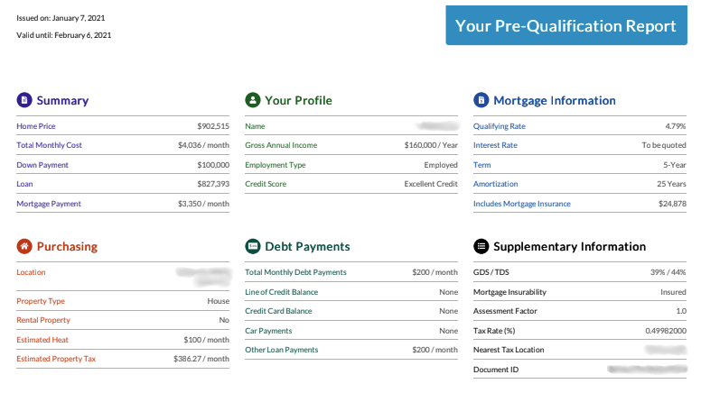
🅟7 January 2021
Hi ▲▲,
Happy new year! Hope you had a great holiday.
Could we schedule another meeting for the mortgage pre-approval please?
The next day after we had our last meeting, 🅒 was called back to work full time, the same company, so no probation needed. That was very exciting for us 4 and we think we are at a much better position than before now.
I tried the app and here is the
certificate
we've got based on our current incomes.
Please let us know if you have any suggestions.
Thank you,
🅟 & 🅢 (🅒 & 🅞)
13 January 2021
Another meeting with ▲▲, 🅞🅒 and 🅟🅢.
🅢22 January 2021
Hi ▲▲,
Thanks for the information. I've just got my employment letter from payroll/HR as well. If it's sufficient for the mortgage purpose, please use this one instead.
The other one sent to you was from our work department. My supervisor was being very specific and of course the lenders might not like the wording that much - "as funding allows". To be honest, there is no ending in sight for the research projects, so I don't think there will be an issue when they call to verify.
Hope that answers your questions.
If you think it is risky, we can look into shorter term mortgages, like 3 years instead of 5, then we can remortgage once the term is over. Would the interest rate be higher though?
Thanks for looking into this and let me know anything else I can do to make the process easier.
Take care
January 2021
Most of January 2021 was spent researching the qualifications of both parties. After meetings and exchange of info with ▲▲ and the mortgage group, a realtor started helping them look at houses.
🅡28 January 2021
Hello everyone,
I hope this e-mail finds you well. I know most of you may have already gone to bed for the evening, and if you haven't already likely don't want to read boring real estate related legal contours and land surface titles at this hour, but hey...if you have trouble sleeping this may help.
On a more serious note though, this information is actually quite useful. I'll be sending documents like this for any property you are interested in viewing. This is just the tip of the iceberg though, as there's always additional phone calls to make to gather more information. For now you'll notice inside this e-mail a property report which contains a lot of useful data, the floor plans (super helpful) and a few other documents. I've also attached my disclosure of representation in trading services form -- a long and horrible name for a form that outlines my duties to you -- as well as a privacy notice and consent form. We can always sign those later as they're not super important now, but will be required later on down the road.
Anyways, I am looking forward to our showing tomorrow night at 6pm at Street Name. If any of you have any questions or concerns please do not hesitate to reach out to me at any time. My phone number is xxx-xxx-xxxx but feel free to e-mail me as well. (Quickest response is usually through text to be honest!)
Cheers everyone, see you tomorrow.
29 January 2021🅟, 🅢, 🅒, 🅞, and with the guidance of 🅡, went to check out the potential house.
Afterward, as the five stood together outside in the brisk evening air, an idea was put forth:
"It's not my place to tell you guys what to do, but I would suggest renting out a place together first. Since you have to move out of your current places now, this way you can at least test the waters a bit. Y'know, let the idea sit for a while."Probably not his exact wording, but something along those lines. -🅡
Let's imagine one of them Trolley Problem things!
In the original hypothetical ethical dilemma, you have a choice to pull a lever in order to divert a speeding trolley. This will result in sacrificing one person to save a larger number of people. Or, the non-utilitarian approach is to "do nothing", which avoids actively intervening in a danger you didn't cause.
Our scenario is not quite as gruesome. We can imagine the couples in this story also having to make one of two choices.
Either choice will result in consequences:
Pull the lever - the two couples find a rental and move into it together as a test run, or Do nothing - the two couples continue to reside in their separate rentals until they buy a house later.
The realtor was absolutely correct.
The idea was clear and sound: 🅞🅒 and 🅟🅢 would find a place and move in together, at least temporarily.
While residing in that rental, they would continue exploring the possibility and feasibility of purchasing a home together, as two couples.
Pop Quiz
Before moving in to the rental together, how many houses did 🅞🅒 and 🅟🅢 look at, to buy?
Why didn't they buy it?
Which of the following was NOT one of the possibilities in terms of a long-term plan?
2 Preparation
6 February 2021
A rental was found, on Birdy roadNot the actual name, obviously..
6 February 2021🅟
Good morning,
(Sorry about the late night email)
We just saw the house posting on Craigslist and are very interested in renting the whole house.
May 1st works out perfectly for us, as we do need sometime to get ready.
We are two couples plus one younger sisterⓈ, and are all family members. Five of us are all working professionals. We don't smoke, don't party and no kids.
We each do have a dog, and they are both very friendly and well behaved. We have been renting with our dogs for the past few years, and they have never caused any problems.
🅢 - Software Developer for School Name 🅟 - Admin Staff for Workplace 1 and will start Workplace 2 in 2 weeks. 🅒 - Full-time Trades job 🅞 - Self-employed business owner
Doggies: v•ᴥ•v (small) and ^·ᴥ·^ (medium) - They are the sweetest :)
We are willing to let you interview our puppies, because we know they are great dogs.
To be honest, we started the year hoping to buy a house togetherTrue. It may have started with that hope, but that quickly changed after having looked at one house.. However, the market has been really challenging for first-time homebuyers. So we decided to waitWhat was the reason for the wait? and saw this house right away. It is such a beautiful property and I understand as the owner, you will want the tenants to take care of it. We are all very reliable and responsible adults who are open to communication & discussion. We assure you we will do our very best to care and maintain the beauty of the property and this nice houseWhat is the difference between a house and a home? in the pictures have already given us the wonderful feelings of being in a homeWhat is the difference between a house and a home?.
We are willing to sign the one-year lease, to provide references and will take care of the house as our own.
Thank you very much for your time and consideration.
We can be reached at this email address or my phone number is: xxx-xxx-xxxx (🅟).
Best regards, 🅟, 🅢, 🅒 and 🅞
6 February 2021 - 9 February 2021
Landlord mentioned in an email: "[W]e have moved this on a quick timeline as we received 11 requests/applications for this house in less than two days so need to move quickly to finalize arrangements (or not) so we can get back to those who are waiting to hear from us."
The four met with Landlord, through Zoom, on the evening of February 8.
Housing Plan Group Chat
🅟4 April 2021
Hi all,
I drafted a shared doc for all of us to write down anything that you might think we can all be aware of or be mindful for when we move into the new house together. The purpose of the document is NOT to tell people what to do/not to do, but to establish the healthy personal boundaries we all need. Me and 🅢 wrote some down already, please write down yours whenever you are free. It's a on-going open communication doc. Love you guys and we are very excited about May!!! (Please share with Ⓢ, as I don't have her email address.)
🅞4 April 2021, 12:30 pm
Thank you for creating all these! My schedule is all over and i might also have to work on top of my business so i might not have much time to see you guys at home even during the weekend. But we will see!
🅞4 April 2021, 12:33 pm
We can also create some house cleaning task sheet as well. we can make it flexible so whoever can't do on the assigned days, they can switch around.
🅞4 April 2021, 12:34 pm
I am excited to declutter house and live in the house where I can actually enjoy and delve into my hobbies and business stuff.
🅞4 April 2021, 12:35 pmThis house is not so motivated and I can't go to the cafe right now. lol so hard to keep myself motivated lol. Why did she feel unmotivated?miss going to the libraries and cafe to study.
🅞4 April 2021, 12:37 pm
Whenever we have a time, we can make a big batch of soup using our instant pots and freeze them :)
🅒4 April 2021, 12:37 pm
I can take care of yard maintenance, like mowing the lawn and such
🅞4 April 2021, 12:37 pm
I will also make a hugh batch of sourdough once in a while and freeze loaves stuff to save our time and money! :D
🅟4 April 2021, 12:38
Don’t stress about it if you can’t as life gets busy ;)
What does our good ol' pal ChatGPT have to say about the above exchange?
This exchange is short, but it contains a lot of signal about group dynamics, alignment, and potential fault lines—especially given that it happened within a short period of time. Here’s a grounded, non-dramatic analysis.
High-Level Read
Overall, this is a positive, high-engagement response to a boundary-setting initiative—but it also shows
asymmetry in how people process structure, responsibility, and emotional tone.
Nothing here is a red flag on its own, but several early indicators are visible.
What the Exchange Shows
1. 🅟 Is Acting as the Initiator / Organizer
🅟:
Sets context and intent carefully.
Emphasizes boundaries, openness, and non-authoritarian framing.
Invites participation rather than imposing rules.
Interpretation:
🅟 is naturally occupying a coordination and emotional-labor role.
This is efficient short-term, but becomes risky long-term if not shared.
Early signal:
If 🅟 continues to initiateKeep this in mind. and soften everything, responsibility may drift toward them by default.
2. 🅞 Responds With Energy—but Also Diffusion
🅞’s replies show:
Enthusiasm and goodwill.
A stream-of-consciousness response style.
Mixing logistics, emotions, and lifestyle aspirations in one burst.
Positive signals:
Willingness to contribute (cleaning sheet idea).
Proactive about food prep and shared efficiency.
Expresses excitement about the living situation.
Cautionary signals:
Heavy emphasis on being busy and unavailable before anyone asked.
Multiple messages that add ideas but don’t clearly commit to responsibilities.
Emotional venting mixed into a logistics-focused thread.
This suggests high engagement, but low prioritization clarity,
and a risk of overpromisingEveryone in that house would turn out to be guilty of overpromising. Not just to each other, but to themselves. socially while under-delivering operationally.
3. 🅒’s Contribution Is Clear and Bounded
🅒:
Offers a specific, concrete responsibility (yard maintenance).
No hedging, no emotional overlay.
Interpretation:
This is an ideal response pattern for shared living.
It reduces ambiguity and future negotiation.
Early signal:
If others don’t match this level of clarity, task distribution may become uneven.
4. 🅟 Immediately Softens Expectations
🅟’s final message: “Don’t stress about it if you can’t as life gets busy ;)”
What this does well:
Maintains psychological safety.
Prevents pressure or defensiveness.
What it risks:
Preemptively lowers accountability.
Reinforces 🅟 as the emotional buffer for the group.
This is subtle but important: 🅟 is managing everyone’s feelings
before expectations are even tested.
Key Dynamics Revealed
A. Enthusiasm ≠ Capacity
Multiple people are excited, but capacity and availability are uneven.
This is fine—if it’s acknowledged explicitly later.
B. Structure Is Being Accepted, Not Yet Adopted
No one pushes back on the document.
Only one person translates it into a clear responsibility.
Others respond with ideas rather than commitments.
C. Emotional Labor Is Already Uneven
🅟 is:
Initiating.
Clarifying intent.
Reassuring others.
This pattern often persists unless consciously redistributed.
Early Warning Signals (Low-Level, Not Alarming)
These are yellow flags, not red flags:
Preemptive unavailability.
Idea generation without ownership.
Emotional venting in logistical threads.
Immediate lowering of expectations to maintain harmony.
None of these are bad—but together, they suggest the group should be careful
about implicit assumptions.
What This Conversation Is Not Showing
No defensiveness.
No rejection of boundaries.
No overt conflict.
No power struggle.
That’s a very good sign.
Practical Takeaway
This exchange suggests the group is emotionally aligned and conceptually on board with structure,
but not yet aligned on accountability mechanics.
For a rental test, that’s acceptable—but before buying a house, the group will need to move from:
“We’re all excited and flexible”
to
“Here’s who owns what, and how we handle gaps.”
25 April 2021🅟 sorted out the Internet stuff for the move
🅞25 April 2021, 11:28 am
Thank you for coordinating all these!!!!
🅟25 April 2021, 11:29 am
No prank 😘
🅞25 April 2021, 12:39 pm
I feel bad for you doing this all 😭😭
🅟25 April 2021, 12:39 pm
Why? Lol
Don't be silly.
It's all done and confirmed. 👌
🅞25 April 2021, 12:40 pm
You guys are all so supportive! I will reward you with a big batch of veggies 😆
🅟25 April 2021, 12:41 pm
🤤
Thank you!!! You are so busy and let’s wait till you have time
Haha no rush
25 April 2021🅟 and 🅞 continue to get excited about making a "big batch" of a fermented vegetable "to survive for the winter".
🅟25 April 2021, 12:55 pm
On another note, For the internet, don’t worry about the bill. Once set up, I’ll add you guys onto the account and it’s only $15 more than what we pay right now anyway, so we are not worried about it. For hydro, me and 🅢 can cover the summer months ⚠️ An example of overpromising -- perhaps this was too much? and we can discuss about it again in September or October if you guys are cool with that 👍
🅞25 April 2021, 12:58 am
No whyyyyyy??? 😭
🅟25 April 2021, 1:00 pm
Don’t cry lol What why? 😂
🅟25 April 2021
We’ve talked about this a bit before and I just want to add an update note. Once you and Ⓢ are on track with your work/jobs, we can discuss more. If I don’t get extension by August for my job, we might have to discuss it too lol But all to the optimistic notes ❤️ We will do great 😊
3 The Honeymoon Phase
1 May 2021
Moved in.
4 May 2021 - 6 May 2021
Shuffling arrangements to purchase and pick up a table for the dining room, Internet technician, and deliveries.
"Sounds like a fun day - Shaw guy coming, gardener coming, food delivery and our bed coming too lol v•ᴥ•v will be so busy barking his head off 🤦♀️" - 🅟
7 May 2021🅒 apologizes for the previous night, as his work had been "stressful and frustrating".What happened?
🅟11 May 2021Ⓢ is magic, she is handling two doggies and they are both super quiet 💕 v•ᴥ•v was stressing 🅢 and me out sometimes as he’s a whiner 👀
The week before, something got into the garbage and recycling outside.
🅞12 May 2021, 10:37 am
Hi Roomies, so I think it was the raccoons who ripped our garbage open last week.
they did it again....
🅞12 May 2021, 10:41 am
Tea bags were wide open all over. and I noticed some plastic containers and tins in there which have to be recycled. so maybe we can deal with that tonight and I am going to clean pieces of garbage near the drive way too. This is so frustrating.... and as garbage and recycling collection is every two weeks. We should Addressing the problem as a shared responsibility. Harmony > Precision, especially so early in the living space together. This is good.be mindful of our garbage and recycle items after we get rid of all of our previous ones we carried from old house and moving. :D
🅞12 May 2021, 10:43 am
Let's work on how we can reduce unnecessary plastic garbages ❤❤ and head over to garden works soon to get some planters and soil to grow some goodieeees D)
🅟12 May 2021, 10:46 am
It might have been the crows too
I see some flying around
If the garbage can can’t take them all, when me and 🅢 go to Village Name on Saturday we can take whatever to the dump
🅟12 May 2021, 10:47 am
And I’m 200% with you on Plastic waste reduction
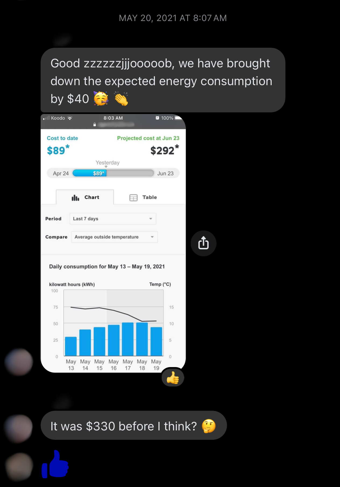
20 May 2021, 8:07 am🅟, concerned about the energy bill that 🅟🅢 would be paying for, congratulates the group for lowering the high projected cost.
🅟20 May 2021, 1:59 pm
Hey family, just a quick FYI so we all are aware - there was baseboard heater on for quite a while, possibly all night? by the coffee bar. We forgotAnother example of shared responsibility. Note the use of the word 'we' instead of 'you', avoiding direct blame. to turn it off, maybe keep an eye on those for future 👍 Sank yew
🅞20 May 2021, 2:07 pm
Oh shoot!
I was gonna turn it off
Sorry! It won't happen!
🅟20 May 2021, 2:13 pm
No Dori, it’s okay duba :) I just like to communicate these things so we all know. Hope you all don’t take it the wrong way, and won’t mind, as we are at some point going to do the sameAnother example of 'we'. This case establishes correction as an ongoing practice in the shared space. ❤️
🅞20 May 2021, 3:09 pmNever taken wrong!Not this time, at least... ;)
Good reminder❤️
🅟25 May 2021, 5:00 pm
The garden waste program looks pretty straightforward. Also by the way I think now that we’ve been in the house for almost a month, maybe time for a family meeting sometime soon? I’m hoping to talk about some scheduling stuff, possibly things that came up for the past while before we forget? Off top of my head: Dinner schedules, cleaning schedules, gardenings and what everyone’s comfortable level and preference are when it comes to do certain tasks based on everyone’s daily working schedules.
27 May 2021🅟 was trying to work, but it was too noisy upstairs.
31 May 2021🅒 gave two weeks notice for his trades job.
🅒4 June 2021If anyone asks about my job, it's easiest just to say I was laid off. I don't want my family or other people telling me I'm making a mistake and giving up a great career.⚠️ Avoids accountability. Most mortgage lenders like 2+ years of stable income in the same field (🅒 had been looking into a TESOL course not long before this message). The "laid off" narrative doesn't help, as they still require income documentation. Were there reserve funds to cover future mortgage payments?
4 Is This a Good Idea?
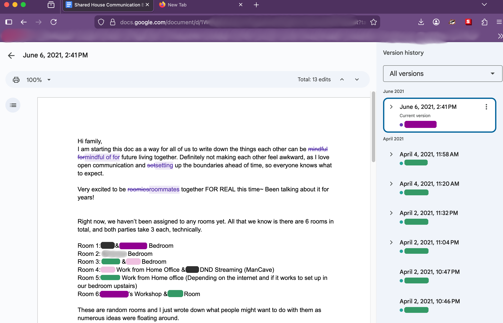
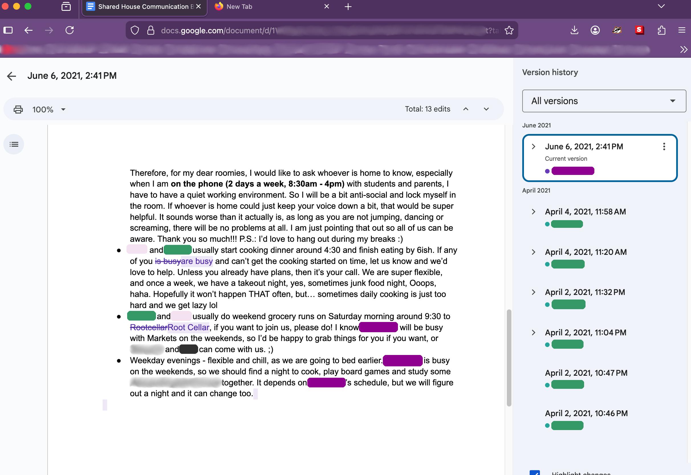
6 June 2021, 2:41 pm🅞 finally "contributes"Her edits are in purple. to the document that was shared two months prior.
(Page 1)
(Page 2)
🅟24 June 2021, 2:21 pm
I don’t have my offer letter
🅟25 June 2021, 2:53 pm
Sorry fam, can we do dinner tomorrow night? I’m in so much pain today and it hasn’t been this bad for a long time… I think the heat is making it worse
By late June and into July, the weather was consistently hot and sunny.
When doing laundry, 🅢 and 🅟 almost never used the downstairs dryer. Instead, they hung their clothes outside in the backyard or on the patio, taking advantage of the clean, fast, energy-efficient summer sun.
Yet there were frequent instances when the dryer could be heard running--sometimes for something as small as a single shirt, a bedsheet, or even a backpack.
This began to trouble 🅢 and 🅟. They wondered whether the others were mindful of energy use at all🅞 always prided herself as being environmentally friendly.--and whether anyone remembered who had volunteered to cover the electricity bill when they first moved in.
At some point, either late June or early July,
🅞 and 🅟 had a conversation about whether or not 🅞🅒 were ready and willing to purchase property in the next while.
🅞's answer was no.
During the "honeymoon phase" of May, the dynamic was one of optimism and excitement as everyone adjusted to the new environment. To ensure this arrangement continued to run smoothly in the coming months, they would need to establish clear boundaries, and maintain open communication. As some of them worked from home, the setup for that would also need to be functional.
After the two couples moved in together, the idea of buying a house together was supposed to continue as an ongoing investigation. 🅟 and 🅢 had been spending their time researching the housing market, as they should have been. But nearing the end of June, it seemed that almost nothing was available, affordable, or practical for four people. There were only places for two people.
Decision-making between 🅢 and 🅟had always been proactive. 🅟 always planned well-ahead.
🅟 was also a private person who needed her space. Going into this, she underestimated how important it was for her to have that. That rental was only temporary, it was not the "final answer". However, as the summer went on, her physical and emotional "bubble" was nevertheless continung to get smaller and smaller while residing with the other couple in that household.
She wanted not just a house. She wanted a home.
That rental on Birdy Road still did not feel like a home, and there was a high possibility that subsequent houses after that, whether it was renting or buying with 🅞🅒, would not feel like a home either.
While living in the Birdy house, the four were all still in the 'research' phase. Nothing was yet official or finalized, but nearing the end of June, the sentiment was becoming very clear: this whole concept would have to change, whether it was a new strategy, or simply some kind of counterargument to the possibility of the idea failing. It was already becoming the case that it wasn't feasible anymore, and either party could have easily reached this conclusion themselves.
But were both couples paying attention, or only 🅟🅢?
Who should bring it up first?
🅟24 June 2021
Hi ▲▲,
Hope you are doing well and staying cool for the heat wave.
Before we know it, it's almost July again! Where did the time go?
Our situation has changed quite a bit in the past few months and 4 of us are actually renting a house together at the moment and enjoying it.
However, for future plans, after all, I think me and 🅢 are ready to buy a condo of our own. It's just not feasible for 4 of us trying to make the same purchase plan in the next while.At this point, it didn't hurt to crunch some numbers.Back in Feb, I actually did change my job and accepted an offer at the university and waited for a few months, finally I have passed my probation and my term position will be permanent now.She changed jobs in February, then waited for her probation/extention. Then, 🅒 quit his job. Did the confirmation happen before May 31?
I am just waiting for the paperwork to be finalized. 🅢 is still working for School and Research Group, on the same project. So both of our employment letters will not be an issue, but might just need to wait for another week or 2 for my official offer to arrive from HR.
I am just wondering if we could restart the process for mortgage approval and this time we are quite motivated to buy a condo. Is there anything we can do at the moment? Or would you be able to give us an estimate based on the information you have and our current income below?
**- Down payment: 100k available to use, including RRSP account**
**- 🅢 Income: 50k per year**
**- 🅟 current income: 47,220 per year**
We are currently working with our realtor, hoping to get the process moving forward.
Please let us know if there's anything we can do at the moment. Thanks for your patience and it's been an awfully long time since we first talked.
Cheers, 🅟 & 🅢
▲▲30 June 2021
Hello 🅟 and 🅢
Congrats on the new position 🅟!
Okay – does your $100,000 have to cover closing costs as well or do you have additional funds to cover legal fees and possible property transfer tax?
If you want to buy for $500,000 and put $100,000 down – the numbers look good.
Buying for $525,000 with $85,000 down also looks good.
I used monthly strata fees of $350 to be safe
Go ahead and make an offer – and please remember to make your offer subject to financing, because although I know you two are excellent, the lender must approve of the property as well . There isn’t a way to do that ahead of time.
Please allow for at least 5 business days for financing and at least a month before completion
Questions?
Let me know and Happy Condo Shopping!
🅟1 July 2021
Hi ▲▲,
Thank you and we are thrilled to know the numbers look good. At the moment, we have not had the updated employment letters yet, and that's okay?
We will work on that next week.
Yes, we would like to have the 100k including all the costs, and if possible, we do want to save some money for emergencies.
The number and house price estimate look good to us and we are looking at properties under 500k at the moment. There are two viewings booked for this afternoon and Sunday.
We are very excited too and the only question is when you'd like to have the employment letters in hand? Right now the HR office is so busy, and we are expecting delays.
Thanks again for all your help!
🅟3 July 2021, 8:27 pmHey, just to let you know for the garden in total we’ve got 7 bags of soil and if we do 3 each, that’s about $17, and I used one extra bag for the bin ;)Planting and gardening was one of 🅞's hobbies/passions.
Throughout that summer, more than once, 🅞 was adamant that they should all find a date and time outside of their work schedules to do some yard and garden work out in the back.
Sank yew prank 💕
🅟4 July 2021
Hi ▲▲,
Hope you had a great weekend.
Thanks for that and we are currently still condo shopping. There were two places we really liked, however, they have got accepted offers in place, so keep going!
My realtor recommended me to check in with you for couplet things:
1. Our situation is we have a one-year lease for the rental we live in right now. If we want to stay here till next April, that means we will need to have the new place rented out until we are ready.
How is that going to affect the tax or mortgage? It's definitely not an investment property though, as we just need to sort things out with the other housemates and it's better to stay till the lease is up. Any insights on that?
We are also looking at brand-new pre-built and will be ready next year. Would that be an easier option? Too many details to consider.
2. If we decide to go with the Brand new condo, would the mortgage process be the same?
Thank you and we will get on the Employment Letters ASAP.
5 July 2021🅞's vaccine day.She had already hinted at her anti-vaccine views to some of the group. This wasn't yet taken seriously.
7 July 2021🅟 talks with Ⓢ about possible tutoring.
🅟8 July 2021, 11:55 am
Hi Fam,
I am just thinking to organize a second family meeting on Monday evening when everyone is home. As everyone's schedule is different so if it doesn't work, we can change.
Things to talk about:
1. House cleaning schedule: Do we take ownership to clean certain areas of the house every week? Or do we take turns? Weekends work best for 🅟 and 🅢 to do the cleaning, but it might be different for the other members.
2. Future planning: We have had some small talks regarding the next year planning, but we do want to keep the communication open and transparent. 🅢 is thinking to go back to grad school next year to do his Masters, and we have to meet the deadline this year before December for his application. Everything is up in the air for now, but we would really like to buy a place this year, as once he is in school again, we can't get mortgage anymore. I understand we are facing different challenges at the moment, and it's not fair to keep asking everyone to be the same pace. With consideration of my mom visiting in the year or so and other things (family planning maybe), getting a house together within the next year doesn't seem to be feasible anymoreThis conclusion was reached way before actually telling 🅞🅒. But the question was when it would be an appropriate time to tell them: Earlier, ahead of time? Or later?. Any insights or open discussions are welcome. These are very specific communications, if it's too much, sorry...
3. Ⓢ's tutoring - I'd like to help Ⓢ with her IELTS, and Friend can definitely be a great help as she is the Speaking Examiner at the testing Centre. Me and Ⓢ talked about it last night but maybe we can elaborate a bit more together.
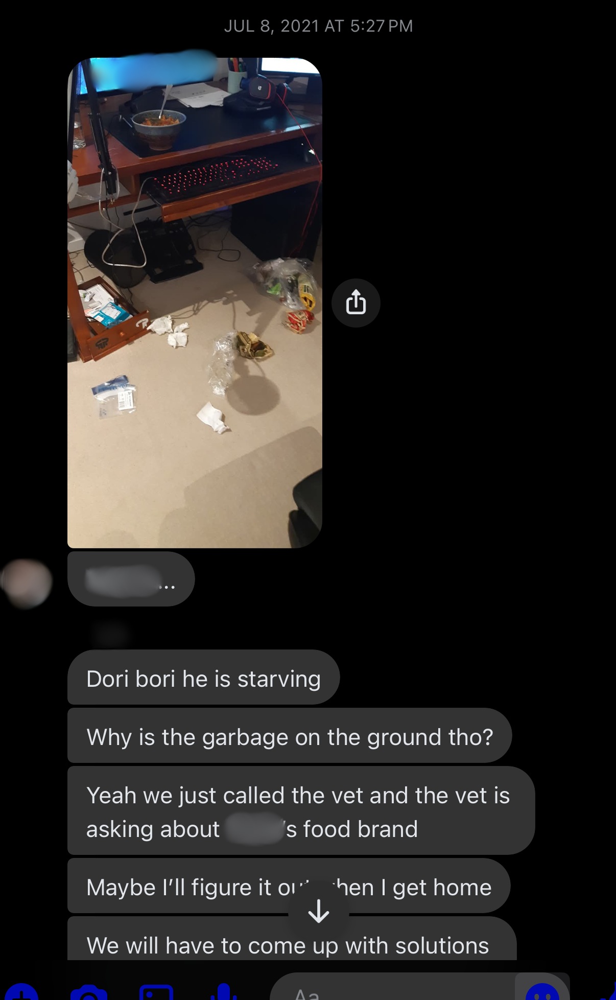
8 July 2021
After work, 🅟 and 🅢 had to meet Friend downtown for dinner. 🅢 secured v•ᴥ•v in the office downstairs, but did not notice the garbage bin on the floor before rushing out the door.
🅟🅢 were talking with their friend about helping to tutor Ⓢ when they received a message in the group chat from 🅒. It was a picture of a garbage mess caused by v•ᴥ•v.
Upset about 🅒's unnecessary passive-aggressive implication ("v•ᴥ•v..."), 🅟 then called their vet to make sure their dog would be okay.
🅟8 July 2021, 5:33 pm
I’ll figure it out when I get home
We will have to come up with solutions sorry, I feel like I can’t even go out with friends anymore
🅟8 July 2021, 5:35 pm
We will deal with him when I get home
Could you please let him go upstairs and if ^·ᴥ·^ is not eating her food, please leave it on the counter? Thank you. We will be back ASAP.
Let's talk about v•ᴥ•v.
v•ᴥ•v was a small lap-dog. When this story took place, he had reached an age when medication and a stricter diet had already become a part of his life.
The two dogs got along just fine. But when left alone, he would keep sneaking upstairs to eat ^·ᴥ·^'s food.
This was not fair to ^·ᴥ·^ because she needed to eat.
This was also not fair to 🅞🅒, because they had to pay for their dog's food.
This was also not fair to v•ᴥ•v either. If he ate food he wasn't supposed to and it messed up his gut and he got sick and needed to go to the vet, who would pay the vet bill?
And now there's the issue of digging into 🅒's garbage can.
v•ᴥ•v was also a territorial breed. The bigger the house, the more he thought he had to protect, and the more anxious he got. If there were two 'layers' to the house, and he kept hearing noises way on the other side because 5 people were constantly coming in and out of the house all the time, that put him on constant alert, which was not good for his mental health.
And if he was constantly running up and down the stairs to see what the commotion was about, well that's not good for his back, his physical health.
🅟🅢 just wanted v•ᴥ•v to be happy and healthy for as long as possible. The Birdy house was a detriment to that, as it put a lot of physical and mental stress on him.
The simple solution to this problem, was to simplify the environment and simplify the dynamic.
The best way to do that was to stop living together, to go back to the way it was before, where they had their dogs living in separate places.
This is better for the dogs and for everyone involved.
Problem solved.
...right?
▲▲9 July 2021
Great question!
Once you have an accepted offer and I get the documents from your Realtor, I put our application together. Then I email you our lender and rate options and we connect to talk about pros and cons of each.
You, 🅢 and I will choose the best mortgage lender and rate/terms together.
This is the fun part 🅟 – enjoy house hunting. You only get to buy your 1st home once.
12 July 2021🅟🅢 and 🅞🅒 have their second house meeting.
Uneventful, other than going over the shared document and emphasizing what was said in the previous email.
🅟13 July 2021
Hi ▲▲,
Thanks so much for all the information. Yes, that makes sense and we are getting closer.
I know we have not made any offers yet. However, just wondering if you are able to give us an estimate about how much we might expect to pay monthly.
If the condo is 480K, with 15% down payment, condo fee $350. With all that into consideration, are you able to tell us how much we are looking at either biweekly or monthly?
We have 2 condo viewings this week, and fingers crossed that we can work something out.
Thank you again for all of your help and support.
Best,
At this point, two full months, May and June, of the "test run" had been completed. Throughout June, the evidence and red flags against the idea were already building up. Not only that, there was already talk about how the housing planning was going. These discussions weren't written down, but all parties knew that house-hunting and research was continuously happening while renting together.
Let's make a pros and cons list!
Buying a House Together
Cons
figuring out family visiting would be much more difficult -- how would they share the space and provide hospitality fairly?
it wasn't fair to force everyone to be at the same pace
mortgage might not be possible if 🅢 is in school
it was not something that 🅟🅢 wanted
it was not something that 🅟🅢 needed
it was not something that 🅞🅒 needed
only one party was able to do this
only one person was doing most of the work regarding this idea
neither party personally benefits from it in any significant way
the only place all four would be able to afford wouldn't be big enough to give both parties the space and privacy that they all needed to live comfortably (which defeats the entire purpose of this idea)
they'd have to worry about each other's schedules
they'd have to worry about personal space and being responsible for each other's shit
they'd have to deal with each other's messes
multiple dogs to take care of and watch over, making sure they don't eat each other's food
they'd have to figure out who owns or who pays for what, who is responsible for which house chores
they'd have to pay attention to all these extra communication channels required between four people
they'd be increasing the paperwork and headache involved in four people trying to purchase a house together (competence becomes a factor here)
one couple, while concentrating better on improving their own lives, would have to balance that with tiptoeing around the other couple who would be trying to do the same thing, so one couple would be increasing the need to monitor the other couple's behaviours as well as their own
the dynamic would be more complicated which risks it being more stressful in general
they got along and survived just fine while living separately before, but now they'd have to change all that by trying to "fix" what essentially wasn't even broken
if they bought a house together, 🅟🅢 would be unhappy, which, because they are all physically stuck around each other, would have an effect on 🅞🅒, then 🅞🅒 would be unhappy (would 🅞🅒 inevitably blame 🅟🅢 for that?)
had 🅞🅒 been paying attention to the housing market, getting a house together within that proposed time frame wasn't feasible anymore anyway
a skewed 70% - 30% split of ownership would mean 🅟🅢 had full say on what would happen with the property in the event of a life change -- would 🅞🅒 be okay with that?
what if one or both couples want to settle and start a family of their own?
Pros
purchasing power (e.g. higher down payment), given aligned financial capacity, risk tolerance and availability
shared costs to reduce financial burden, given consistent contribution and income stability
space optimization (e.g. living room, Man Cave), given compatible lifestyle habits and privacy expectations
skill diversification (e.g. gardening, car maintenance, trades), given clear roles and balanced contributions
reduced isolation and sense of community, given strong interpersonal compatibility and conflict management
It's important to note that, although none of the 'cons' listed above make the idea impossible, the moment they decide to live separately (exactly like they were doing before), all of these potential issues magically disappear into thin air. Poof!
5 Exit Strategy
🅟🅢 had been researching the housing market for a while now. They had already explained that the idea of buying together wasn't feasible anymore.
The question now was whether they should go ahead and buy a place for themselves, or if they should wait, until they either move out or some other reason.
What should they do?
Pull the lever - they buy their own home
Do nothing - they do not buy their own home
Hmm ... is a meeting about this situation really necessary?
Pull the lever - have the meeting Do nothing - don't have the meeting
🅟14 July 2021
Me and 🅢 drafted a letter to you guys regarding our plans, please give it a read and let us know what you think. We poured our hearts out and I’m at the point feeling stuck, so any insights would help. Thanks 🙏 💕
🅟14 July 2021
(Subject: "Communication about the Condo Hunting plan - PLEASE READ THOROUGHLY")
Hi family,
There is some communication that needs to be done today and we'd like it done in writing. So that we don't have to come back down the road, words against words. (work habit lol)
Me and 🅢 might have a lead in a permanent home that we like in Village and we are going to see it tomorrow after work. Right now, we haven't made any offers yet, but it's likely to be a snap moment decision in this market.
Before we view the place, we just want to talk to you guys about this again. We are very determined to get the place, as our life plans and deadlines will not allow any further delays. Of course, there is a chance we might not get it, and people might outbid us.
But if we do, there are a few options we can try our best to make the transition easier, not just for you guys, but also for ourselves.
1. We are inquiring about renting out the new place till we are ready to move in. However, there will be huge income tax complications and we will lose all the first time home buyer benefits, as the place will be considered a rental investment, which is not. And we might be required to put down 20% down payment, which is okay, however, we do want to have some extra cash for the closing costs. All that being said, we are expecting thousands of dollars' loss, which we can't afford ;(
2. We inform landlord and let them decide what they want to do with the downstairs, as technically this is a separate suite and if it wasn't me and 🅢, with ^·ᴥ·^ being approved by the house owner, you will likely have to share with other people. Of course, I understand you guys are not willing to do that, and trust me, me and 🅢 have been trying our best to figure out a way to have our life together, and also make you guys happy. My all-time saying- don't want to lose you guys over this. We thought about paying both, unfortunately we are not able to afford that option with our salary, as it's additional $13,000 till next April.
3. So can we meet half way before my head explodes? - Joking 🅢 and I are not cheap or flaky people, and it's just a different situation when it comes down to finding a permanent home and it is our priority. Sometimes situations happen and life gets in the way at a non-perfect timing.
We are thinking that if we do make an offer tomorrow, once accepted, the potential moving-in date is September 1st, and we can pay extra 3 months rent for the Rental House plus the security deposit, that would be 4 months in total. $5000 for three months ($1680 per month right now for me and 🅢 part), and that would cover till the end of the year 2021. You four can enjoy the whole house while we can save some down payment and tax money. It's still a lot of money but we figured this is the amount that we can afford the max and that will guarantee you guys here until the end of the year. Of course, we might slowly move to the new place and we won't be gone overnight. As 🅞 mentioned the other day, with the uncertainty of Ⓢ's staying next year, a lot of things might have to be reconsidered. We wish we could cover more rent till next year, but we can't. I know we signed the lease till May, but if we give landlord enough notice, we can come to a mutual agreement when it would be the best time for you guys may be staying for another year, or something else from January 2022 onward.
We are enjoying our living together so far and it's definitely nice to have everyone around, hanging out at night. Back in Feb, we came to an agreement that with Ⓢ staying in Country for a year, and ^·ᴥ·^ needing a bigger space, and you guys wanting to get out of your Up-island basement; And our last landlord was ghosting us, and so and so and so... We made a good decision to trial run this house. Buying a place has never been off me and 🅢's plate for the past few years though and we completely understand your situation at the moment, with career change and start-up business. Stepping in your shoes, I wouldn't want to be pushed into a job I might not like, just for the sake of buying a house. But for me and 🅢, we will have to, either now or never with all the uncertainties coming up. We don't want you to take it the wrong way, but down the road, for me personally, I don't want to be blamed for backing out on friends for the rentalForeshadowing.. As we all know, this house is benefiting all of us in so many ways, close to my work, ^·ᴥ·^ being able to enjoy the yard and space, 🅒 and 🅢 loving the office and 🅞 enjoying the kitchen and garden. Hmmm, the only one who might not like this place is v•ᴥ•v, hasn't adjusted to the big space yet.
Anyway, it feels lighter to let all these thoughts out in the open and I don't like to hide things or not to communicate. We will definitely keep you in the loop about the process and meanwhile, there should be enough time (6 months till January) for you guys to think about what you want to do next.
Thank you for reading the lengthy message. It's a lot but necessary. Please reply to the email with any thoughts. We would appreciate that very much!
🅞15 July 2021
Hi all,
Thank you for your email.
We will consider and organize our thoughts first and get back to you via email.
Please do not email Landlord yet"don't talk to the landlord" count: 1 before we come up with any solutions.
Thanks,
🅞 & 🅒
15 July 2021🅟 & 🅢 went to see two units in the same condo building in Village, one on the second floor, and the other on the third floor.
An offer was made on the condo on the 3rd floor.
15 July 2021, 7:00 pm
The offer was accepted.
🅟15 July 2021, 8:00 pm
Hi ▲▲,
We just got an accepted offer an hour ago.
Here’s my realtor’s contact: 🅡 xxx-xxx-xxxx
I gave him your contacts as well.
We are sooooo excited!!!!
Thanks very much for everything :)
We are going camping Tomorrow after work and wonder if we need to book a meeting soon?
Best, 🅟 & 🅢
15 July 2021, night
Big time crunch as the four needed to be ready for camping the next day.
🅟 approached 🅞 to talk about something.
For some reason, there was some resistance from 🅞 as she wasn't ready to talk quite yet.
16 July 2021
The five went camping.
17 July 2021
After their return from camping, 🅟🅢 and 🅞🅒 had their third house meeting.
Oh no—not another Trolley Problem! 🙄
What should 🅟🅢's strategy be for this meeting?
Pull the lever - Ensure that the conversation is productive, e.g. making sure they don't go off topic. Do nothing - Say very little or nothing at all to allow 🅞🅒 to get all their thoughts out.
Disclaimer: The following animation is based entirely on memory, as no footage of the actual event exists.
(click to refresh)
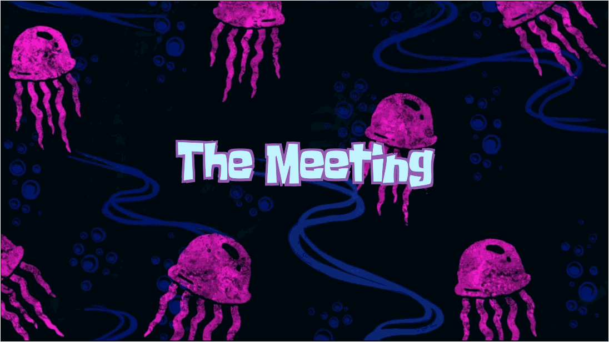
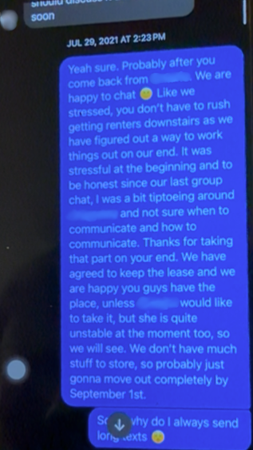
🅒 later told 🅟 that discussions involving house planning and other logistical matters tended to proceed more smoothly when he spoke with 🅟 directly. He indicated (and 🅢 and 🅟 had also observed this previously) that such conversations were often more difficult when 🅞 was involved.
Following the last house meeting, 🅒 proposed that future discussions regarding the housing situation and related planning be handled directly between himself and 🅟. His view was that this approach would allow logistical matters to be addressed more efficiently.
As a result, as per 🅒's request, 🅞 was not included in those particular conversations after July 16.
After that meeting, some time passed, which allowed tensions to cool.
🅟 and 🅞 later were able to have an in-person conversation during which COVID-19 came up, among other things. 🅞, who had already shown interest in pseudoscience, was even more pushy with her views this time. Given that they occasionally visited an older family friend, these anti-vaccine views made 🅟 more and more uncomfortable as they kept talking. There was a lingering sense of unease afterward.
🅞19 July 2021, 12:05 pm
Hey folks,
Hope you are having a great Monday. Ⓢ and I are wondering if it's possible to invite some friends (4-5) for sleepover on August 1st to 2nd. We will leave the house before you come home. If 🅢 and 🅟 can let us know what time you arrive.
We might use my and Ⓢ's room for them to sleep so let me know if 🅒 are okay with that. More likely me and Ⓢ are using our bedroom.
However this plan is not set yet. We are asking you all first before we go ahead and ask our friends. One of our dear friends is coming to visit us from City, so I want to make it special for her as I haven't seen her for a year. She is vaccinated for the second dose as well as her husband. And all of my friends who are coming over are vaccinated as well if you are concerned.
Please let me know if this is something we can do. If you don't feel comfortable, it's totally fine with us so any opinions would be appreciated. 🅞 clearly remembered the conversation she had with 🅟 earlier.
The thing is, 🅟 wasn't comfortable living there anyway. There was a much deeper problem at this point.
Thank you!
🅟19 July 2021, 12:11 pm
Sounds good, we are likely to stay at Village on the 2nd, so don't worry.
Have fun 🤩
🅞19 July 2021, 12:12 pm
Thank you all! We will let our friends know. It might not happen but we wanted to let you all know first before we plan more.
🅢 and 🅟 had an argument late at night, with 🅟 expressing how uncomfortable she was living with 🅞. It seemed 🅢 didn't quite fully grasp the weight of what she was saying.
🅢 and 🅒 had been spending most of their time in their Man Cave downstairs, and neither really understood the interactions that had been happening between the two wives while they were all living there.
There were clear boundary issues in that household and 🅢 downplayed how incompatibile the living space was for his partner.
Private Chat
🅟22 July 2021, 7:19 am
Hey, sorry I had really rough time for the past few days. Me and 🅢 had a very unpleasant episode too, so that was just like the cherry on the 💩. Anyway, sorry if I made the house atmosphere weird, not you guys, it's me. We had a long walk and talk last night, and I'm coping it.
🅒22 July 2021, 8:27 am
👍
🅟29 July 2021, 11:16 am
Hey 🅒, let me know when it's appropriate for us to let Landlord know that we are moving out on September 1st. Nothing changes, except hydro and internet. Our names are on the lease for the year. Friend still needs sometime to decide if she wants to live downstairs or not, but no worries if she can't. We are totally willing to keep the lease till April 30 as we agreed to
No pressure finding anyone either if Friend doesn't take it.
I can draft the email and send it to you to read first
We are going to UpIsland tomorrow so don't want to leave you guys hanging, as I know you are going East too,
Thanks
🅒29 July 2021, 11:51 am
Sure! Could we figure it out when I'm back from East?
🅟29 July 2021, 12:23 pm
Sorry just realized you are working. No rush to respond, I'm just getting the communication part out. Don't know when you are back from East, but Yeah definitely for all the household stuff, we can figure them out as we go. Just for Landlord, we are hoping to give them a month notice as technically we did just finalize everything on the new place, so it would be better to let them know sooner than hold that decision back.
This part is really just a courtesy from me and 🅢 to her, won't affect anything about you guys ! promise.
🅒29 July 2021, 1:52 pm
Sure, let them know that I can be the main contact as well! 🅞 and I were talking about the downstairs renter situation as well, you and I should discuss it at some point soon
🅟29 July 2021, 2:23 pm
Yeah sure. Probably after you come back from East. We are happy to chat 🙂
Like we stressed, you don't have to rush getting renters downstairs as we have figured out a way to work things out on our end. It was stressful at the beginning and to be honest since our last group chat, I was a bit tiptoeing around 🅞 and not sure when to communicate and how to communicate. Thanks for taking that part on your end. We have agreed to keep the lease and we are happy you guys have the place, unless Friend would like to take it, but she is quite unstable at the moment too, so we will see⚠️ 🅞 called her "flaky".. We don't have much stuff to store, so probably just gonna move out completely by September 1st.
Sorry why do I always send long texts.
One thing we did want to ask is about the damage deposit and if we don't live here, how that is goingto work. We can discuss that after you come back.
Thanks very much!
🅒29 July 2021, 3:00 pm
Sounds good! Have fun on your trip
The group finally found a day that would work for everyone to do some gardening.
When the day finally came, the recently bought bags of soil were brought out, everyone rolled up their sleeves and started working in the backyard.
But 🅞 was nowhere to be found.
🅒 also grew increasingly frustrated as the afternoon wore on, as 🅞 was not answering her phone. He also needed to figure out what their dinner plan was.
Finally, after most of the soil had already been laid out, 🅞 arrived home.
She had gone out for a haircut It can be confirmed that this incident was sometime after July 16: in the group chat, Ⓢ shared a photo she had taken on their camping trip, of 🅞 with long hair. and simply forgot about the gardening plan.
30 July 2021🅟 and 🅢 traveled to the coast.
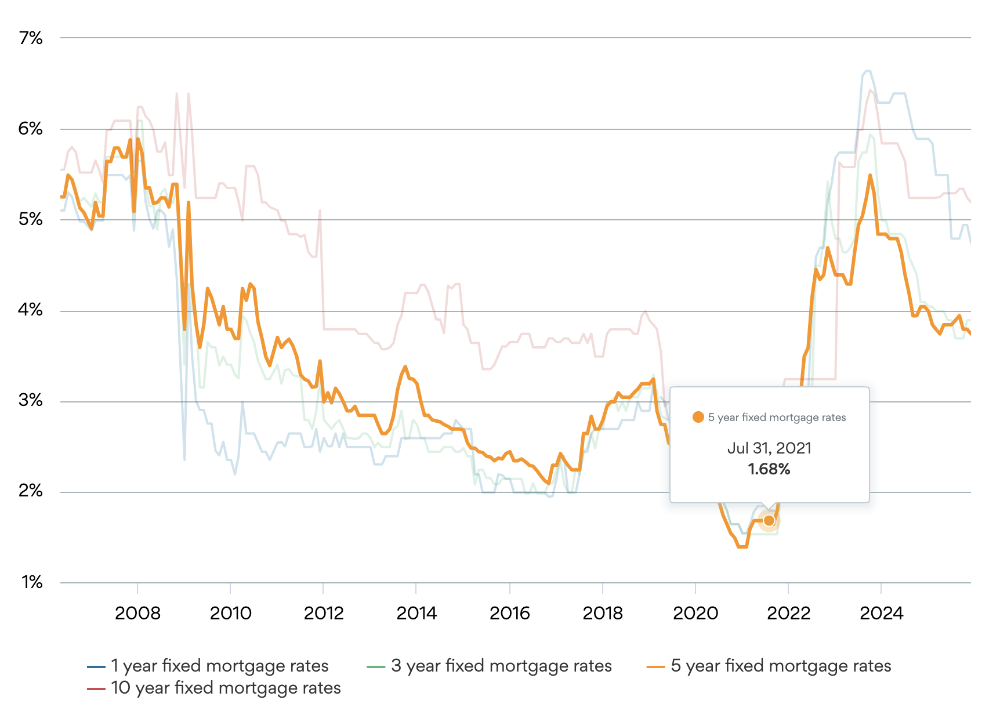
July ended with finishing up the conditioning, preparations, and paperwork for 🅟🅢's new condo.
Specifically, the steps were:
- to confirm that they had stable income, credit history, and a down payment
- to talk with their mortgage broker and get their pre-approval
- to search for properties that fit their budget and needs, with the help of the real estate agent
- to make an offer (Very little negotiation was needed for this home -- another buyer put in their offer, which did have the risk of a bidding war. Luckily, things went rather smoothly.)
- to arrange and review inspection results
- to secure final mortgage approval and arrange home insurance
- to coordinate with a lawyer/notary for contracts and closing
All of these things required coordinating zoom meetings, 100s of pages of strata plan documents that they had to read and sign, exchanging emails, making sure all their finances and bank stuff were sorted out. And doing all of this in a timely, efficient manner.
This all costed money, too. There was always the chance that they could go through all of that but something is miscalculated, something goes wrong, and the deal just doesn't go through at the very end, after all that. And what if it didn't?Well, then they would continue searching for a new home and do all that all over again.
By this time, the 5 year fixed mortgage rate in Canada had been stable at 1.68% from April to the end of July 2021. There was no guarantee that it would stay at this rate.
This particular unit in the condo had two parking spots.Just making a point here.
It would have been really stupid not to put an offer on this place.
🅟31 July 2021
Dear landlord,
Hope you are doing well and enjoying the long weekend.
We are writing you this email to let you know me and 🅢 have just bought a condo. All the conditions came off later this week and we are finishing up the final paperwork. We will be moving out on September 1st. We are definitely thrilled to finally have our own home, but we understand this might complicate our rental house situation. Thanks to 🅒, 🅞 and Ⓢ’s understanding, we have been able to come up with a solution. We feel it’s necessary to let you know as early as possible. Our plan is to make NO changes, Me and 🅢 are going to keep the lease till April 30th, 2021 as we had agreed to. We will continue paying for rent till April, 2022. The only thing that might change would be the main contact for the household will be 🅒 after September 1st, 2021.
🅒, 🅞 and Ⓢ will continue happily living in the house as long as possible, hopefully beyond the lease date, but that would be something you guys can discuss later (upstairs-downstairs).
One of my friends might be interested in subleasing the downstairs suite from me and 🅢 if it’s allowed, around October 1st, but nothing concrete yet.
Me & 🅢 love the Rental House too and the fact that you guys have been very nice and helpful. It hasn’t been an easy decision, but we are all adults and sometimes things have to be done when the right time comes, especially in Our City house market, where leaves not much time for decisions.
Thank you so much for your time and understanding! If you have any questions, please let us know.
All the best, 🅟 & 🅢
1 August 2021
Landlord responds that they have groups of students as a possible sublease.
1 August 2021 - 5 Aug 2021
At some point during the first 5 days in August, 🅟 and 🅒 had a conversation about the possible replacement tenants that the landlord was in contact with.
🅞2 August 2021, 4:59 pm
Thank you for letting our friends hang out here.
Just noticed that one of the compost bags you guys threw out was ripped open in the bin. Maybe from the sunflower seed shells.
We may have to clean the bin after the garbage day this week. We can help you, but next time if the bottom is broken, you can double bag :)
🅟2 August 2021, 5:05 pm
Sorry we didn’t notice, will clean the bin.
No worries
🅞2 August 2021, 5:05 pm
We can clean together. It might be a pain to do for 2 people.
Friday afternoon, I can help, so let me know.
🅢 cleans the bin himself as it was a one-person job.
🅞3 August 2021, 10:51 amv•ᴥ•v is whining a lot and ^·ᴥ·^ whines too. I can bring him up here. I have to leave too so I don't want him stressed out alone.
🅞3 August 2021, 11:02 am
He seems fine now.
🅞3 August 2021, 11:12 am
And I put a zucchini and bush beans from our garden in your fridge, hope you don't mind.
🅞3 August 2021, 11:29 am
Never minds he barks too much. He is downstairs.
I gave him a good hug
🅟3 August 2021, 11:29 am
Yeah he can go upstairs if you don’t mind. Sorry he’s usually fine by himself unless he hears movements, we don’t know where to put him otherwise.
🅞3 August 2021, 11:29 am
He calmed down now so all good
🅟3 August 2021, 11:29 am
We will come home to pick him up around 4:30
🅞3 August 2021, 11:30 am
I don't mind if you have to put him upstairs when we are home too.
🅢3 August 2021, 1:19 pm
Is it okay if my sister and her baby stays the night tonight and tomorrow night? She and the baby need some space to sleep better at night, my brother’s place is a little crowded.
🅞3 August 2021, 1:21 pm
No we don't mind, where can they stay though? Maybe the office room?
We can figure something out for them.
🅟4 August 2021
Hi I set up the monthly $420 rent arrangement with Ⓢ and sent the calendar invites to the email address. Aug 1st - April 1st, 2022. So we both can keep track. Thanks! :)
5 August 2021, 8:39 pm🅟 forwards, to the group, the message that Landlord sent on August 1 about possible tenants.
🅟5 August 2021, 8:39 pm
Almost forgot. We’ve let Landlord know and here are the communication threads to keep everyone in the loop. I talked to 🅒 about this before our trips.
Once 🅒 is back, no rush, we can find a day and chat about the household stuff.
Cheers! :) 🅟 & 🅢
🅞7 August 2021, 1:26 pm
Are you 🅢 and 🅟 home? If you are, do you mind letting ^·ᴥ·^ out? We both left house early morning and not going home until 4ish.
If you are not, don't worry about it!:)
🅟7 August 2021, 1:40 pm
She’s been out earlier, and we are heading home now, she and v•ᴥ•v are staying together.
🅞7 August 2021, 1:43 pm
Oh! Good! She will be happy to stay with him.
Thank you!
🅟 has her vaccine.
🅟8 August 2021, 12:01 am
Is everyone already done? Sorry it’s just really loud and I’m trying to sleep, if it can be kept down a little, it would be greatly appreciated. I’ve been having a headache. Thank you, and good night :)
🅞8 August 2021, 12:04 am
Sorry I had to quickly grind something, I thought you weren't asleep earlier as the light was on.
We are all done.
🅞8 August 2021, 12:08 am
My apologies for the loudness It just has been too busy that I had to prep a lot of things for the business, before I leave early morning tomorrow.
If you guys are sleeping down there because we are too loud, we will keep it quiet after 10.
so you guys don't have to sleep down on the floor as we are sharing the whole house together not just only 3 of us until you leave. So make yourself home.
Have a good night. 💤
🅟8 August 2021, 8:35 am
Thank you and don’t worry about us staying downstairs, things are fine. Let’s just each have some of our own space for now, plus we have started packing, so hopefully to clear the big room upstairs for you guys soon. Originally the mattress was just for Sister and the baby, but after it was too heavy to drag it back up there, so we decided to pack it.
I had my vaccine yesterday so quite tired and sore last night
🅞8 August 2021, 8:47 am
Ok no worries. Once the room upstairs is clear I can move my stuff from the downstairs room so you guys can keep the boxes down there
🅟8 August 2021, 8:47 am
I think for the past few months, kitchen and laundry at night were our concerns sometimes.
Thanks for offering the quiet time in the house, means a lot, doesn’t have to be 10. Around 11:00pm-ish would be super helpful already.
🅟8 August 2021, 8:48 am
We are here for another 3 weeks, if you guys want any house stuff let us know before we sell them ;)
🅞8 August 2021, 8:50 amOkay laundry I can ask Ⓢ not to do it at night. She is doing the laundry, and the kitchen, I was trying to keep it quiet but sometimes I had to get it done. You could've let us know if it was bothering you guys.
⚠️ Some notes:
Not being a disturbance is a pretty basic common courtesy as a housemate or neighbour. 🅟🅢 shouldn't have needed to remind 🅞 in the first place.
If 🅞 needed to get these things done for her business and noisy things were part of that prep list, then 90% of this issue would have been easily solved by doing the loudest things first on that list, i.e. the blender.
If quiet time was already offered earlier, then why try to justify or make excuses at this point?
If and when the new tenants move in later on, then would the new tenants complain? And if so, would
🅟🅢 be blamed for that because 🅟🅢 "could have let them know"? Why is it 🅟🅢's responsibility to monitor noise levels?
Why was 🅞 using her little sister as a scapegoat?
Sorry about that.
🅞8 August 2021, 8:56 am
Anyway we make sure everyone feels comfortable for next few weeks!
🅟8 August 2021, 8:57 am
Doesn’t matter anymore, people have different schedules and we just didn’t realize that. I’m only saying this now because you offered quiet time in the house.
🅟8 August 2021, 8:58 am
Yeah if you want a face to face chat, I’d happy to. Communication through texts sometimes just doesn’t know if you are okay with it? Angry with it? So I’m not good at guessing lol
if you want to chat as a friend anytime, we should. ❤️
🅞8 August 2021, 8:59 amNot angry at all. Just feel bad that we made you feel uncomfortable. So all good!
Anyway have a good sunday! ⚠️ 🅞 never once took her up on this offer.
Almost no face to face communication ever happened between 🅞 and 🅟 since the last house meeting.
🅟8 August 2021, 9:08 am
Oh okay, if that is the case, don’t be. We are quite alright and comfortable. :) Keep using 🅒’s PlayStation tho lol Telling you about the kitchen and laundry is not to make you feel bad, just a reference for future. The day we came back from Up-Island, you told us about the compost and we didn’t feel bad, just cleaned it and moved on. We do care about how you all feel and trust that the feelings are mutual.
🅟8 August 2021, 9:08 am
Yeah you have a good day too. Ugh My head is still foggy 😶🌫️ 😆
🅞8 August 2021, 10:28 am
Hope you feel better soon.
Keep yourself hydrated
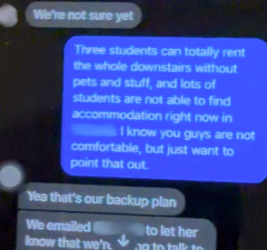
🅒10 August 2021, 1:05 pm
Hey so, the thing I wanted to talk about with the new renters was:
Obviously we really like Friend, but she can only rent a portion of the downstairs, which leaves us with more than half the rent to pay once Ⓢ is gone.
🅞 is going to reach out to some of her friends to see if they are willing to rent the whole downstairs.
I also saw in the email you sent that Landlord is looking for people/found people to rent... however We're not super comfortable with strangers living down there
is there a time we can chat more about this?
I will have stream at 7 tonight.
🅟
Hey
Yeah I'm free tonight
Well, for new renters I don't think Friend is going to rent this place.
And also like I said you guys don't have to rent it out at least for the length of the lease
I mean right now you guys are paying more rent as me and 🅢 are paying $1680
If Ⓢ is gone, does it mean me and 🅢 are going to pay $2100?
Just trying to clarify and confirm
🅒
Ideally we'll find someone to rent the lower level before Ⓢ goes, then I will discuss with the new renters the split
🅟
I thought you want to keep the office
I'm just getting mixed information and a bit confused
🅒
I do, but we can't afford it
🅟
Last time when we had meeting, you guys were saying even when Ⓢ is gone, you guys will pay her part
🅒The bottom line is, 🅞 and I are going to find people to rent the entire lower levelNope. The actual bottom line was that 🅞and 🅒 were choosing to continue staying in that rental to extend their short-term plan. Any resulting tenant situation was irrelevant, since they were already taking that risk into account.
We can't afford too muchHe is raising concerns about their financial stability, which is fine. But what about that of 🅢 and 🅟?.
🅟
Us neither, But we will keep the agreement till April 2022. I'm just being really realistic here, hypothetically what would happen if me and 🅢 didn't buy a house, but Ⓢ is moving back to her home?If the condo hadn't been purchased or even found, how would the rest of the summer play out?
🅒We're not sure yet⚠️ What was he not sure about? It was pretty clear that 🅒 and 🅞hadn't thought this through.
🅟Three students can totally rent the whole downstairs without pets and stuff, and lots of students are not able to find accommodation right now in City. I know you guys are not comfortable, but just want to point that out.
🅒Yea that's our backup planBy saying this, 🅒 was accepting this possibility, of students/strangers living underneath them, and potentially being uncomfortable with that situation. Also, he's saying 'our' and not 'my', indicating that he and his partner had this talk already--they both accepted this plan.
We emailed Landlord to let them know that we're going to talk to 🅞's friends first and to switch me over for the main contact
🅟
Yeah okay that's fair and thanks for letting me know.
Look 🅒, really don't want to lose you over this as a friend, and I've been trying my best to make things work, just hope you understand.
🅒
Of course! We know thatHere, 🅒 is admitting that 🅞 and 🅒both acknowledge 🅟's effort in trying to juggle two things at the same time:
A) sorting out living logistics
B) making sure the friendship between the four isn't compromised
, we're just trying to come up with a solution for ourselves that's more long term
I'd like to continue living in this place for a while longer, if possible.But why?
This is not their long-term plan.
This is their short-term plan.
The trial run had already ended. Neither party was required to continue residing there.
🅟
This is just me, if you guys are subletting downstairs, it might even been easier with students, house rules and stuff. But I could be wrong.
Just for the record we have no problem living with you.⚠️ Calculated language: "We have no problem living with you specifically, 🅒."
Living with them was tolerable given that it was a temporary plan, not a permanent one.
If three rooms downstairs $800 each that would take bigger half of the rent
Okay. Can I give you my other two cents?
My thinking is you guys live in the house the way it is, with me and 🅢 on the lease till April
2022. Once the lease is up, you two or three can sign a separate lease with whoever you decide to live with downstairs, to avoid future confusion. If your concern is Ⓢ, you don't know yet...
So if she does leave in January, you would have been paying $2100 anyway. I just don't want you to get too anxious about things yet to know or too quick to react. Right now it's so easy to find renters and especially near University.
I could be reading you wrong, so It's totally up to you guys. The reason why we offered to stay on the lease is to give you guys a year of time, and we are not backing out the lease in 3 months.This still begs the question: Why should they give them that much time? What was the incentive for staying on the lease?
If me and 🅢 were staying, this is just an after fact, we were ready to move downstairs and have downstairs as our own space anyway. But that's just something unrelated lol
I've got my thoughts out and now back to work. If you want to chat, I'm free every day after work, so totally up to your schedule.
🅒
👍
🅞13 August 2021, 10:25 am
Hi guys,
Would it be okay if my friend's couple stays from 17th to 19th? They leave on 19th. They will stay upstairs and during the day, they will be out mostly.
They were trying to find a place to book but it seems like all booked.
If it's uncomfortable for you, it's totally fine to say no. She is just asking around.
We will keep it quiet at night, no parties since it's weekdays.
Let me know if that's doable. Please don't feel bad to say no.
🅟13 August 2021, 10:35 am
I think it should be fine
🅞13 August 2021, 11:56 am
Are you sure? They said they would pay for the accommodation.
🅟13 August 2021, 12:06 pm
Sorry I was working. Yeah we don’t mind. Upstairs is your house and I think you and 🅒 should have full say about it. We really don’t mind
Thanks for checking with us tho, appreciate that ;)
🅞13 August 2021, 1:26 pm
Thank you!
🅢13 August 2021, 5:01 pmNo problem, feel free to hang out with your friends in the evening. during weekdays, we usually go to bed between 11-11:30 (which was the time mentioned before), so all goodBit of a late response.
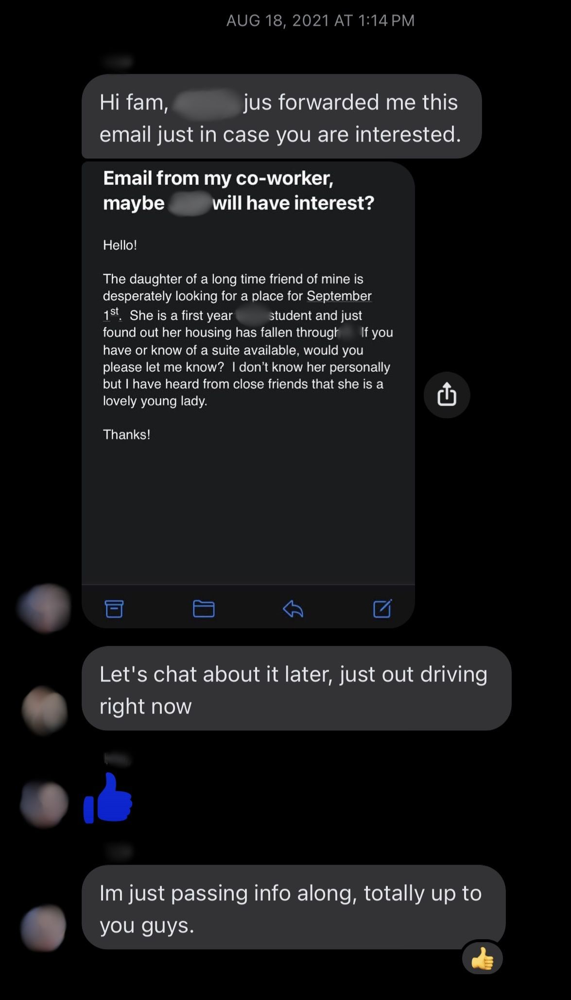
🅟18 August 2021, 1:14 pmHi fam, Family Friend just forwarded me this email just in case you are interested.
🅒18 August 2021, 1:25 pm
Let's chat about it later, just out driving right now
🅞18 August 2021, 2:05 pm
When should we set up our shaw account and transfer Hydro?
Also just realized we haven't paid for the internet, let us know how much we owe you.
🅟18 August 2021, 5:01 pm
I talked to 🅒 about it already and there’s no transfer over. So you guys can set it up anytime, the earlier the better just in case they need some notice. Our account will follow our address. If You guys are new customers for Shaw probably can get a sweet deal signing up.
I sent some info to 🅒 already
Don’t worry about the Shaw fees for the past few months.
;)
🅞18 August 2021, 5:06 pm
Thank you! I will do that
22 August 2021🅢 fixed the door downstairs.
🅟23 August 2021, 12:56 pm
Hey, it’s our last week on Birdy Road and we will be completely out of the place by next Wednesday after lunch time. It’s been a pleasure for the past few months and thanks for your support and understanding during this difficult time. Sorry if it’s not the best time to text as my only available time is during lunch break and want to communicate early in case there are questions. We are all busy, so not sure if the in-person meeting will happen. There are last few household things on our check list and figured to let you know sooner better than later.
- Power Company and Cable Company services will be transferred to our new address on September 1st. Next Power Company bill will be split 50/50 in mid September and we will send over the receipt once it’s ready.
- The dinner table, you guys are welcome to have it. I paid $150, and just would like to have $50 for that.
- Me and 🅢 hope to hold on to the keys as our names are on still on the lease and Landlord still has $2100 from us. As we don’t physically live in the place anymore, so we probably hope to be spared from being liable for any potential house damage. Hope you understand. If you guys find the right fit for downstairs, we will hand in the keys in exchange of the new tenant’s security deposit when the time comes. If not, it’s fine to leave it the way it is.
- No change for the rent. Landlord has our post dated cheques. One quick note: Each month on the 1st, please send $420 to 🅟@email for the rent arrangement. Would really appreciate it to be in time as there are quite few payments coming out that day. Thank you so much 🙏!
- Downstairs pantry door was broken and 🅢 fixed it yesterday so it’s all good.
- Before we leave, we will clean the space downstairs.
For the rest of the week, if there are any questions, please let us know. Thank you again!
🅞23 August 2021, 1:24 pm
Sounds all good to us!
I was gonna ask about the table too so thank you. We will etransfer right away.
🅞23 August 2021, 1:26 pm
And if you don't mind, we will keep the TV as you offered :) since our old TV doesn't fit here. Thank you for offering.
And yes for Hydro, once we get the invoice, we will transfer the money. We have created our Hydro account so all good.
Group chat messages would be sparse for the next few days.
In the few days before moving out, 🅢 and 🅟 were barely in the househhold and would often go to the beach late at night to clear their heads and get alone time with each other, and also to give 🅞🅒 their space.
All that was really left was to finish packing and clean.
🅢 and 🅟 just got a new mortgage. If they continue paying rent on top of that, then that's two drain holes in their financial sink.
They did offer to stay on the lease in the hopes that it might help the other couple have more time to find tenants, but they also felt they had already done quite a bit for the other couple over the years.
Given the last meeting they had was rather unpleasant, would it be emotionally risky to bring this up? Should they question their part on continuing the lease? Offering to stay until April, let alone December, was a lot. They hadn't talked to the Landlord yet, so would they even approve? What was the incentive for keeping this "promise" in the first place? Only one of 🅞🅒 was able to communicate these things, but how did they both really feel?
🅢 and 🅟 were not mindreaders. But 🅟 had to start this conversation somehow, before it was too late to bring it up with the Landlord.
If they question their staying on the lease, should she bother explaining?
Pull the lever - preamble with lots of context to justify the question Do nothing - just ask the question directly: "Why are we doing this?"
6 Ripping the Band-Aid Off
27 August 2021🅢 was working from home, in the office downstairs. 🅟 was not working from home that day.
🅟27 August 2021, 12:37 pm
One last thing to get out of my chest, and it might sound a bit strong or awkward but here we are. I’ve been battling with if I should say it or not, but I believe in communications even if it means uncomfortable conversations. I know our decision to move on was a surprise for all of us, and we have been trying our very best to maintain the peace, financially and emotionallyClearly something was up, 🅒 and 🅞 were upset about something.
🅒 and 🅞 refused to say anything.. Even though there’s a housing shortage everywhere, we don’t want you to rent unless you guys are absolutely happy to. The hurtful feeling for me, personally, is after all these years, we don’t even get a “Congratulations, or we are happy for you as a friend.” I hope you remember we have been there for you, from your visa issue, PR application and every time when you move homes. We don’t mind paying $4000 a monthShe should have been less apologetic here: "We don't want to pay $4000 a month if there's no reason to..." so that you guys can be stable as we had agreed to, but I’m really not sure what we are protecting here anymore. I love you guys no matter what, and maybe I just need some distance and time. Wish you all the best ❤️
🅒27 August 2021, 1:06 pm
Let's be clear here, we know and appreciate your guys help in the past, but the rent you're paying here per month is NOT 'charity' for us"Charity" can mean financial, emotional, or situational support.
This comment suggests that their staying on the lease was none of those.
, it's literally the lawNo, it l i T e r A l L y wasn't.
It was not "the law" to continue staying on the lease. Here, he was already reaching that conclusion himself when they hadn't even talked to the Landlord about it yet.
. You guys signed a legally binding contract (the lease) for a year.What if all four of them found and bought a house? Would that mean all of them are "trapped" in that lease for a year?
And we are going to find people to take over it to ease some financial burden off of youThere shouldn't be a financial burden, at all.
He's completely missed her point.
.
🅟27 August 2021, 1:13 pm
I really don’t like you using the word charity
It only means we are trying
🅟27 August 2021, 1:14 pm
I’m getting my feelings out just the same as you guys did in our first meeting
Not only you guys are stressed out or have feelings
27 August 2021
Sometime around 3 pm, 🅒 started washing dishes (or something) in the kitchen upstairs. 🅢, still working downstairs, could hear some commotion between 🅒 and 🅞, about the message from 🅟. The only thing 🅢 could make out was "Well it's not my fault!" from 🅒, and then the loud SLAM! of the front door upstairs.
Clearly 🅞 didn't like what 🅟 said.
🅞27 August 2021, 3:26 pm
First of all, let's not talk about this matter here. Hypocrisy: She is demonstrating the exact opposite of what she's demanding here, by continuing to talk about it in the group chat. I don't want to stress out Ⓢ any more. She doesn't deserve this.Where was Ⓢ's stress coming from?
You are welcome to say however you feel but we have been trying hard to process all this What exactly was there to "process"? 🅟 and 🅢 had already explained and gave them sufficient information to work with.
What "all this" did 🅒 and 🅞 have trouble understanding?
Why should 🅒 and 🅞 get to decide 🅟 and 🅢's pace?
Why should 🅟 and 🅢 slow down their situation for 🅒 and 🅞's emotions to catch up? And what then?
without being dramatic🅟 and 🅢's proactive planning and communication, their being procedural and solution-oriented ... was "dramatic"? What was there to be dramatic about?.
I don't think you guys understand the situation and just so itching to get things doneIt was a lot of work purchasing property. It was also a lot of work navigating the world as a grown ups (maybe 🅞 should have tried that?)
"itching" to get things done? What did she think 🅟 and 🅢 were doing? and move on. Relationship doesn't work like thatWhy was she so insistent on turning this into a relationship problem? This had nothing to do with relationships, and everything to do with establishing a living space that was going to work. The two couples living together was NOT going to work.
If anything, 🅟 and 🅢 were trying to prevent the relationship from being affected by moving out of there and giving both couples the space and privacy that they all needed, which was already becoming a problem in the Birdy house.
Does a relationship require someone to act against their own best interests for an undefined amount of time?
.
You can't force someone who's hurt"hurt" because of what? to forgive"forgive" what?
She made it sound like 🅟 and 🅢 were supposed to apologize for something.
instantly just because you feel uncomfortable.
And we didn't forget what you helped us.
As i hate owing someone, I think those helps were mutualShe's treading a pretty fine line between the help being mutual versus the help being expected.. We did our parts to help as friends
What does this even mean?
Here's what real help would have looked like:
What 🅟 and 🅢 needed from 🅒 and 🅞, as friends, was to respect 🅟 and 🅢's needs and boundaries.
What 🅟 and 🅢 needed from 🅒 and 🅞, as willing participants in an experiment, was to not forget or misunderstand the assignment.
Did 🅒 and 🅞 respect their friends' privacy and boundaries and well-being?
No, they did not.
Did 🅒 and 🅞 remember why they moved into that rental together in the first place?
No, they did not.
They did not, in fact, "do their part".
Therefore, 🅞 is lying.
. I would give my 200% to anyone who I deeply care.
Why did she have to resort to hypotheticals to make her point instead of just providing real examples?
Why was she saying "I would give my 200%", but not "I have given my 200%, here are some ways in which I helped"?
🅟 was able to provide examples, so why couldn't 🅞?
How could she be making this kind of statement when she knew she didn't have the evidence to support it?
The shit that 🅟 and 🅢 needed help with was in investigating the idea of living together. Everybody was supposed to be pitching in and figuring this out.
How did 🅞 help with this experiment?
It wan't about being a good hostess and cooking food for their guests.
This was about 🅞's contribution to a long-term goal. If the goal was for all four of them to buy property together, where was 🅞's "200%" with regard to that goal?
But those were the past and I don't understand what was the point bringing that up.The point of 🅟 bringing up all those things was to justify why she was asking the question:
Why continue paying extra money if they didn't have to?
If they truly didn’t take their help for granted, then at this moment why would it have mattered whether they continued staying on the lease?
Did you do all those things for returns? One simple 'return' would have been sufficient: respect their autonomy by allowing them to have their own place without condition.
We never took it for granted.
🅒 provided Reason #1 for not staying on the lease: It wasn't about helping 🅒 and 🅞, it was about following the rules.
🅞 provided Reason #2 for not staying on the lease: Even if it does help 🅒 and 🅞, this help was not expected.
Since we cared you so much like family, damage is done immenselyWhat "damage"? Emotional or material/situational?
By typing out this message, 🅞 was demonstrating the exact same "immense damage" she was accusing them of doing.
.
Throughout all this shit showThis is her choice of vocabulary, her sentiment.
Why was she calling it that?
What was it about the situation that made it a "shit show"?, there are the moments and thoughts that made me feel despise myself due to the confusion, frustration, anger, shame and other feelings.
But I didn't want to react emotionally or say everything I felt
How does this help their case for buying a house together?
.
I was confused because I believed the commitment you guys showed as friends was real friendship == living together
This is her framing.
She started questioning the friendship on July 8: that seed was planted the moment they were told that the idea wasn't feasible anymore.
. That is why we are most disappointed.
In our last meeting, we didn't have a chance to fully express how we felt as we were stopped every time we wanted to talkIf they had been able to "fully express" themselves, how would that have changed anything?
Again, how would successfully expressing their feelings help their case for buying a house together?
🅟 and 🅢 asked them at the end of that meeting if there was anything else they wanted to add. 🅞 kept her mouth shut, unresponsive.
Yes, they were stopped every time they wanted to talk about stupid irrelevant shit.
If "feelings" were all they had to offer, then that's all they had to offer.
.
And you keep saying you love us and explain what kind of people you guys are, but you don't need to explain. Behaviors show
Were these "behaviors" happening before living in the Birdy house together, or during their time spent in the Birdy house together?
Were these "behaviors" detrimental to the idea of living together, or were they proving to be detrimental to the friendship?
In either case, why would they continue to buy a house together?
And why would they be upset when they don't buy a house together?
By mentioning this, 🅞 was helping 🅟 and 🅢's case for not continuing with this idea..
We know you cared about us a lot and we did the same. But now we are not sure. I don't have any hard feeling for you guys. I just cannot act like nothing happened.
"I have no hard feelings" vs "I have hard feelings about what happened"
This is a logical contradiction.
If the situation wasn't like this we could've congratulate you but sorry I can't fake.
Please don't make us hateThis is her choice of vocabulary, her sentiment.
Where was the hatred coming from?
you guys. We don't want to. I don't like holding grudgesThis is her choice of vocabulary, her sentiment.
Where was the grudge coming from?
and I don't.
Things have changedAt this point, no new tenants had moved in yet and they hadn't yet moved their stuff upstairs either. Also, 🅒 and 🅟 were able to talk through and sort out living logistics the entire summer without them needing 🅞's help or input.
Therefore, since nothing physical had actually changed about their living space and she didn't have to deal with the 'mental' stuff either, then whatever she thought was a "shit show" or "changed" was entirely in her head. and you guys should accept it. We didn't put ourselves in this situation.🅒 and 🅞 agreed to put themselves in an experiment. Their "situation" was continuing to stay in the rental market, which entails communicating with a landlord, dealing with tenants, and moving around.
They chose this.
This is a perfect example of 🅞 trying to run away from accountability.
It's good that you found your home you were dreaming about it so long. We hope you can start fresh in your new chapter of life.:)
Here, she was finally recognizing 🅟 and 🅢's autonomy. But the entire message before this last statement indicated the opposite.
If these roles were reversed, and 🅒 and 🅞 had found and bought a place for themselves and moved out of that rental before 🅟 and 🅢 managed to do that, then
🅟 and 🅢 would have been happy for them and said this exact same thing first, but without all the unnecessary baggage.
Fix the Responses
How can we make these responses sound more reasonable?
🅒
Let's be clear here, we know and appreciate your guys help in the past, but the rent you're paying here per month is NOT 'charity' for us, it's literally the law.
You guys signed a legally binding contract (the lease) for a year
And we are going to find people to take over it to ease some financial burden off of you
❌ 👎
Let's be clear here. We appreciate your help in the past, but you are making it sound like we are holding you hostage when that is simply not the case. Everyone is expressing financial concerns, and we figured that you might question your offer especially if it's on top of your new mortgage. All we wanted was for everyone to follow the rules, so let's see what the landlord says.
You've already done enough for us, so don't worry about me and 🅞, we'll be fine. Go enjoy your new home!
✅ 👍
🅞
First of all, let's not talk about this matter here. I don't want to stress out Ⓢ any more. She doesn't deserve this. You are welcome to say however you feel but we have been trying hard to process all this without being dramatic. I don't think you guys understand the situation and just so itching to get things done and move on. Relationship doesn't work like that. You can't force someone who's hurt to forgive instantly just because you feel uncomfortable. And we didn't forget what you helped us. As I hate owing someone, I think those helps were mutual. We did our parts to help as friends. I would give my 200% to anyone who I deeply care. But those were the past and I don't understand what was the point bringing that up. Did you do all those things for returns? We never took it for granted. Since we cared you so much like family, damage is done immensely. Throughout all this shit show, there are the moments and thoughts that made me feel despise myself due to the confusion, frustration, anger, shame and other feelings. But I didn't want to react emotionally or say everything I felt. I was confused because I believed the commitment you guys showed as friends was real. That is why we are most disappointed. In our last meeting, we didn't have a chance to fully express how we felt as we were stopped every time we wanted to talk. And you keep saying you love us and explain what kind of people you guys are, but you don't need to explain. Behaviours show. We know you cared about us a lot and we did the same. But now we are not sure. I don't have any hard feeling for you guys. I just cannot act like nothing happened. If the situation wasn't like this we could've congratulate you but sorry I can't fake. Please don't make us hate you guys. We don't want to. I don't like holding grudges and I don't. Things have changed and you guys should accept it. We didn't put ourselves in this situation. It's good that you found your home you were dreaming about it so long. We hope you can start fresh in your new chapter of life. 🙂
❌ 👎
First of all, things have been happening so fast, it slipped our minds! We have been trying hard to process all of this but also trying to be objective and rational about everything.
Let's have a face to face chat, as you suggested before. It's good that you found your home you were dreaming about it so long. We hope you can start fresh in your new chapter of life. 🙂
✅ 👍
27 August 2021🅢 went upstairs to talk to 🅒. 🅢 mentioned something about 🅒 being a "no bullshit kind of person", and 🅒 replied that he is "just trying to be objective and rational about everything".
This would be the last time 🅒 and 🅢 spoke face-to-face.
🅟27 August 2021, 4:11 pmOkay let’s settle it then. I’m calling Landlord and we will get it sorted out. Let’s meet tonight and get talked out"Let's cut the BS and do this properly. Enough with the compromising. Let's stop tiptoeing around each other and trying to guess what the 'correct' thing to do is."
I’m not faking it either and we didn’t do anything wrong or force you guys anything To be honest, I do hate myself, A LOT⚠️ Unnecessary.
🅒27 August 2021, 4:22 pm
Hey, let's not escalate this too far⚠️
1. Who was the one escalating?
2. Why was it 🅟's job to de-escalate?
3. Why didn't 🅒 tell his wife this?
4. What does "too far" mean? What was 🅒 worried might happen?
The problem was clear: The effort 🅟 was putting into ensuring a smooth transition was vastly disproportionate to the recognition of this effort. . Obviously we're all
emotional right now
⚠️ 🅞 had just admitted they were already emotional and "hurt" before🅟 questioned why they needed to continue the lease.
What reasons did both parties have for being emotional? , I think we just need to spend a bit of time apart to figure things out🅟 had already suggested this..
In the meantime let's stick to the plan, once summer is over we'll have more time to look for tenants for downstairs
⚠️ Completly ignoring 🅟's financial concerns by insisting on this "plan" without providing any reason for it.
🅟27 August 2021, 4:48 pm
To be completely honest with you, I just care about you and our 10-year friendship.
🅞's words were too hurtful. The only thing I asked in my message is you guys as friends to be happy for us, that's all it is. We are legally allowed to assign tenants but we don't want to cuz i want to protect me, you and 🅢's relationship. At least now I know how she really feels.
The world doesn't revolve around her, and I have been stressed out too.
27 August 2021, 10:09 pm🅟 leaves the group chat.
🅟28 August 2021, 12:05 am
Hi Landlord,
With our mortgage and the rent, plus other payments, the pressure is coming down heavy on us. Me and 🅢 want to inquire about if possible, ending the lease early, and we can give you 4 months notice as we know you‘ll need time for transition. The last rent payment can be Dec 1st, 2021.
If 🅒, 🅞 and Ⓢ want to stay upstairs, they can sign a new lease with only their names on it, and the downstairs can be rented out separately. We can do our best to help find replacement tenants. With the housing crisis at Area, it really won’t be too much of an issue.
Please let us know if there’s anything we need to do, and we can send in an official request in writing again, then copy everyone onto it.
Thank you,
🅟 & 🅢
Ⓛ28 Aug 2021, 9:26 am
Hi 🅟
You initially contacted us on July 31 and advised us that you would be moving out on September 1 but would continue to honor your obligations under the lease. At that time, I advised you that I had the names of a number of students who had contacted me looking for a September 1 to April 30 rental. You did not take me up on that offer and said you might have a friend who would be interested in subleasing the lower suite but in any event the only change from our perspective would be that you might no longer be the contact.
Had you told us on July 31 that you wished to end the lease, we could have accommodated that for an August 31 end of the lease of all or part of the house. However, we cannot agree to a December 31 end date. For many reasons all of our City rentals end on August 31 or April 30.
Options:
You can sublease until April 29, 2022 (a) the lower 2 bedroom suite or (b) the lower level as a three bedroom unit. I can send people who have contacted us looking for a rental your email info if you like. Some of these people we know and some know someone we know.Option 1
You can end the lease as of August 31, 2021. The others can (a) rent the upper level (b) rent the upper level and the big room across from the laundry room or (c) move out. We will rent the lower level suite, the lower level suite and the big room or the entire house depending on what you chose. If any of those options interest you, we will let you know the new lease terms and the cost/damages for ending the lease early (we would need to be covered for all of our costs such a travel costs to and from Our City, one month of rent as we will be taking the risk of not renting for Sept, etc.).Option 2
From our perspective, there is a small window of opportunity available now. Please talk with the others this morning and let us know your collective plan by early afternoon. All five of you need to remember that you are collectively one tenant and all are jointly and severally liable for all obligations under your sublease. For that reason I request that you forward this email to the other four this morning and reply all going forward so that all of us are on the same page.
🅟
Please see Landlord's email and let us know what you guys would like to do. We’d like to stay till December, and Landlord offered the soonest or October 1st. Me and 🅢 are willing to shoulder any inconvenient fees.
Just to be clear, the July offer for having students on September 1st was forwarded to 🅒 and 🅞 right away for considerations.
Just to be clear if it’s sublease, me and 🅢 will take care of renting out downstairs. Me and 🅢 are willing to shoulder any inconvenient fees. Nothing changes upstairs for their spaceStill giving the courtesy of allowing 🅒 and 🅞 to make that decision..
Thanks,
🅟28 August 2021, 9:52 am
Hi I've calmed down and let's just do this the right way, it's not charity. I've forwarded you guys the email Landlord asked. We are exhausted and let's just put an end to this. Sorry it has to be this way, but we've done what we can.
🅒28 August 2021, 11:05 am
So, to be clear, we're ALL ending the lease August 31st?
And me 🅞 and Ⓢ are resigning it?
Ive read the email, I'm just confused
🅟28 August 2021
Yes.
You will sign a separate one just with your names on it
🅒28 August 2021
Okay, I've emailed Landlord to confirm
🅟28 August 2021
Thank you very much!
Ⓛ28 Aug 2021, 10:08 am
Hi 🅟
Just confirming that we have not offered an October 1 end of lease date.
🅟28 August 2021, 10:28 am
Yeah you are right. Thanks Landlord for correcting that.
Our offer to stay till December 31st stands. If all parties agree, we are happy to end the lease in Dec 2021 the latest.
Cheers,
Ⓛ28 Aug 2021, 10:33 am
Just confirming that we will not accept a Dec 31 end date of all or any part of the lease – if you stay your option is to sublease until the end of April commencing whenever you wish. The only end date we will agree to is August 31 as set out below.
landlord
🅟28 August 2021, 10:47 am
Thanks Landlord.
- August 31st works for us, as they can sign a new lease with you starting September 1st. If it ends up not being able to rent out in time for downstairs, we are willing for pay for the rent loss and any inconvenience cost.
- **Sublease works for us too, and we can start on September 1st as well**. Me and 🅢 have quite a few desperate student looking for homes.
Thank you for being clear and transparent.
🅟 & 🅢
Ⓛ28 Aug 2021, 12:01 pm
Hello Everyone,
It seems clear that the lower level will be rented out to a new group – either:
1. by you as a sublease in which case all 5 of you will continue to pay the rent until the end of April and you will provide us with names of potential subtenants (with information about them and references) for our consent; or
2. by us as a new lease in which case we will enter into a new lease of the upper level with 🅒, 🅞 and Ⓢ as of September 1 (please note that as the upper level has a higher rental value than the lower level so the rent for the upper level would be $2300 per month plus a portion of the utilities. As well, we would be taking the risk of not renting the lower level as of Sept 1 and with only 3 days’ notice, $2100 would be payable as damages and the lower level would have to be vacated and professionally cleaned by August 31).
Can you please all talk about this amongst yourselves and let us know what you decide this afternoon.
Thanks,
🅒28 August 2021, 12:13 pm
Please do not email Landlord back"don't talk to the landlord" count: 2, I will email her myself when i've spoken with 🅞.
But I believe we will take option 2He was already deciding on Option 2, when he knew this option meant they wouldn't get to choose who lived underneath them.
He is showing concern, here, but about what, exactly?
What information could 🅟 possibly give to the landlord that would prove to be problematic for 🅞 and 🅒?
What exactly was it that they didn't want the landlord to know?
.
Again do not email Landlord"don't talk to the landlord" count: 3, I will do this today
🅟28 August 2021
Sounds good. We will make sure everything is ready and in order downstairs. We are staying at Family Friend's for the remaining days. Might stop by on Wednesday to grab the internet box. That would be it. Thank you 🅒!
🅒
You guys are paying the damages and for the professional cleaning, correct?
🅒28 August 2021, 12:33 pm
Let me know asap so I can email her
🅟28 August 2021
Yes
We are paying
🅒28 August 2021
Excellent, I will email her shortly then
🅒28 August 2021, 12:55 pm
Hi Landlord!
Thank you for your patience in this matter, we've discussed it and option number 2 works better for us.Why did this option "work better" than option 1?
We've also spoken to 🅢 and 🅟, who've agreed to pay the 2100$ cost and the cleaning bill.
We will make sure everything is cleaned out of downstairs by August 31st.
Thank you again for your patience, and let me know if there's anything else we can do to help the process!
Thank you, 🅒 and 🅞.
🅞28 August 2021, 2:15 pm
We will transplant our plants and return your planters by tomorrow.
Let us know if there is anything we have to return. We will make sure to get things all organized by tomorrow.
Ⓛ28 Aug 2021, 5:14 pm
Hi all,
Please see the attached Modification of Sublease Agreement. I think it covers off everything agreed. Please review the attached and let me know if you have any questions.
If all is good, please arrange for all five to sign page 3 of the attached and insert 🅒’s cell number in section 2(f). Please return the signed agreement to me later this evening.
Thanks
Landlord
28 August 2021, 5:30 pm🅢 and 🅟 sign the modified sublease.
28 August 2021, 5:51 pm🅞 and Ⓢ leave the group chat.
28 August 2021, 6:05 pm🅒 and 🅞 sign the modified sublease.
🅒28 August 2021, 6:08 pm
There's the new agreement, with all of our signatures on it.
One question I had was, we are sending the 200$ now as the pet/damage deposit has increased, but did you also want an extra 200$ for September's rent?
Obviously we're going to have to send out more post-dated cheques for the coming months!
Let me know what works best for you!
Thank you, 🅒 and 🅞.
Ⓛ28 Aug 2021, 6:23 pm
Hi Everyone,
Attached is a fully signed copy of the Modification of Sublease.
🅒 – I confirm receipt of the additional $200 deposit. It would be great if you could etranfer the additional $200 Sept rent and mail cheques for the remaining 7 months (please make them payable to Landlord Lastname and mail to Address).
Thanks all for your quick decisions and replies on this.
We will be by the house on the afternoon of August 31, 2021.
Quick recap (present tense) on the timeline thus far:
14 July🅢 and 🅟 mention that the "solution" to continue staying on the lease is already a lot of money, which meant there would be a high chance this idea may change.
15 July🅒 and 🅞 tell them to wait, so they could come up with solutions themselves ("We will [...] get back to you via email. Please do not email the landlord yet [.]").
10 August🅒 and 🅟 have a discussion about rent payment arrangements. 🅒 says they "can't afford too much", and 🅟 says "us neither" but that they would still keep the proposed agreement until April of the next year. At this point both parties have expressed clear financial concerns. 🅟 also questions how the rest of the summer would have played out if they hadn't bought the condo, but 🅒 is unable to answer. 🅒 mentions that he and 🅞 have both accepted the backup plan of having little to no control over who would be the replacement tenants (and the potential discomfort of that particular situation).
A month and a half then passes without a response from 🅒 and 🅞 -- they never did "get back via email" like they said. Which meant that the only idea or solution still on the table was the provided default, of 🅒 and 🅞 relying on 🅢 and 🅟 to continue paying extra money until the end of the lease, when this default solution was already questionable.
27 August🅟 questions this current payment plan, of why they should continue staying on the lease, in the group chat.
🅒 confirms that they didn't have to.
🅞 then also confirms that they didn't have to.
Despite the above, 🅒 ignores 🅟's financial concerns by insisting on the "plan" anyway without providing a reason.
28 August🅟 inquires the Landlord about ending the lease early, who gives two options: continue staying on the lease until 29 April 2022, or end the lease as of 31 August 2021.
🅒 emails the Landlord to confirm/understand these two options.
🅒 and 🅞 then email the Landlord themselves, opting for 🅢 and 🅟 to end the lease because it "worked better". 🅒 and 🅞 then sign the modified sublease.
🅟28 August 2021, 7:07 pm
Hi Landlord,
Thanks everyone and everything looks good.
We have a set of house keys, front and back doors. But not the laundry room ones. Also we would like to get the remaining post dated checks back except the deposit $2100. Any other additional fees, please let us know and we can e-transfer.
We can leave the keys on the kitchen counter downstairs by the end of tomorrow, and could you leave the checks for us to pick up on August 31st? I can swing by the house on August 31st, after work around 5:00pm.
Or any other better way to handle the remaining checks, please let us know. Thanks.
Cheers,
🅟 & 🅢
🅟28 August 2021, 8:35 pm
Hi Landlord,
I’ve tried to contact professional cleaners, but most places are closed and if we can’t get an appointment in for Monday by tomorrow morning, we will buy all the professional graded cleaners/bleach, and give the downstairs a deep cleaning, making sure it’s in the same condition as when we moved in.
Is that okay? and thank you.
Best,
🅟 & 🅢
Ⓛ28 Aug 2021, 9:50 pm
Hi 🅟
We need it professionally cleaned. Please contact our cleaners - Name-1 and Name-2
I will let them know to expect your email
Thanks
🅢28 August 2021, 10:14 pmIf no one is moving in yet
Although 🅢 and 🅟 had no awareness of who would be moving in, they were well aware that whoever moves in could be people they know or they could be complete strangers. They could be quiet or noisy.
But it doesn't matter: Starting September 1, the lower level becomes entirely the Landlord’s responsibility: the type of people who would end up in that part of the house had nothing to do with 🅢 and 🅟.
After signing the modified sublease, 🅢 and 🅟 carried no duty and had no right, to manage, select, or influence replacement tenants at any point in this process. , can we book the appointment for September 4th?
We can still quickly clean it in the meantime and send over some pictures.
If not, we can call on Monday. We are trying but, is there any alternative if we can’t find any last minute cleaner?
Thanks
- 🅢 & 🅟
Ⓛ29 Aug 2021, 9:18 am
Hi 🅢,
Please book early Saturday morning Sept 4 if possible. We will figure it out. I can get keys to Name-1.
Thanks
🅟29 August 2021, 12:17 pm
Hi Landlord,
We are just following up with questions asked yesterday re: the remaining checks we submitted as well as the keys.
We are not living in that house at the moment, so it would be nice to know how the process works - re: remaining checks and keys.
The cleaning service is confirmed for September 4th.
No rush and thank you.
Ⓛ29 Aug 2021, 12:22 pm
Hi 🅢 and 🅟. Yes I can bring the unused cheques and leave them with 🅒 on August 31. Please leave the keys in the respective bedrooms. Thanks.
🅢29 August 2021, 8:44 pm
Hello Landlord,
Sounds perfect and thank you.
We’ve cleaned the downstairs, and left the 2 keys in one of the rooms. I forgot to bring mine today, but 🅟 can drop it off tomorrow before or after work in the mailbox and let 🅒 know.
Ⓛ29 Aug 2021, 9:01 pm
Thanks 🅢.
On the keys, we left the Keys shown below for your group. We need to leave 3 Front Door keys and 3 laundry room keys with 🅒 – and we need all three back door keys. Can I leave you to sort that out with 🅒?
3 Front door keys
3 Back door keys
3 Laundry room keys
🅢29 August 2021, 9:07 pm
Hi Landlord,
Yeah. I can ask him. Just to confirm I only took 1 front door key. 🅟 took one front one back. We didn’t take any laundry room keys.
I have copied him onto this email for communication purpose and we will sort this out.
Ⓛ31 Aug 2021, 8:04 am
Hi everyone
Just wondering where things are at with the keys - we need the three back door keys today when we come by - please leave them in an obvious spot in the suite. That will leave 🅒 with three front door keys and three laundry room keys.
The lower level has been rented and they will be moving in over the next few days.
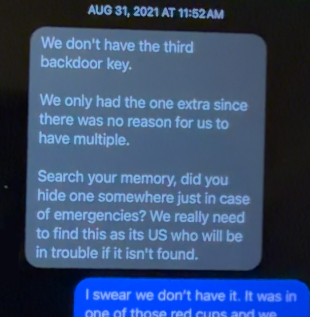
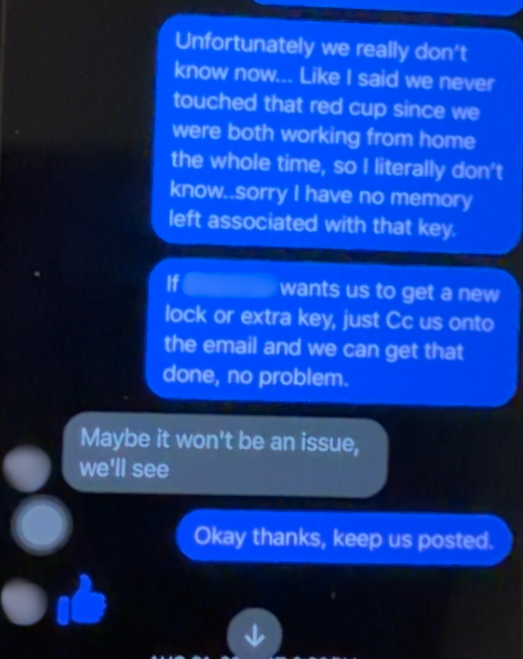
31 August 2021, 11:52 am🅒 panics about getting in trouble just because a key is missing.
🅟 has to reassure him that it won't be a problem.
The Landlord collects the keys later that day and leaves 🅒 with the post-dated cheques.
🅞2 September 2021, 8:26 am
There are more of your stuff behind the hydrangea bush near the wooden gate as I didn't want someone to take them thinking they are free.
I put those under the deck yesterday, but 🅒 might've forgotten telling you guys, I moved them.
Also there are a bunch of moving boxes and amazon boxes you forgot to take so we put out as recycling.
Let us know if anything you can think of.
Thanks.
🅞2 September 2021, 12:26 pm
Oh also, one of new tenants just moved in yesterday and found the worn underwear'underwear' count: 1 and clothes so they put them in the garbage bag with other stuff. I put those with other stuff behind the bush too.
hopefully no more stuff pops up.
3 September 2021🅢 doesn't pay attention to 🅞's messages.
3 September 2021, 11:45 am🅟 asks for her cheques.
🅒 then indicates that he had already destroyed them⚠️ Destruction of property.
🅞4 September 2021, 6:02 pm
Hey just wondering when you are gonna pick your stuff? Can you respond when you read the message? It's already stressful to deal with the new tenants.
Your stuff is sitting there for few days and now getting wet from rain. just need to know when your stuff will be gone. So let's get this done. 🙂
That would be fantastic.
Ideally, gone by this weekend. 🙃
🅢 did not read these messages carefully. 🅢 did not care at this point. 🅢 did not want to talk to 🅞.
After that second house meeting, 🅞 barely made the effort to speak face-to-face with 🅟 and only used the group chat to communicate.
🅞 already had the opportunity, the entire rest of that summer up to this point, to help communicate information with 🅟 and 🅒 about both current and future living spaces.
🅢 could see right through her happy face emojis: 🅞 had already admitted that she had to fake being happy for the accomplishments of people around her. Why was 🅞 suddenly able to be cordial and try to coordinate things with 🅢?
She already blew it. Why start now?
🅢4 September 2021, 6:34 pm
Please leave the stuff outside in the front. 🅟 contacted 🅒 and went to the house on Wednesday and Friday after her work. There was nothing to be found out at front and nobody was home. 🅒 was up-island. We don't know your schedule. If you leave them out at front, we will take them today.
Maybe talk to 🅒 about it as we have been trying to get our stuff back this week. Thank you.
🅞4 September 2021, 6:35 pmI think I have messaged you above explaining where we put the stuffTrue.. 🅒 forgot to tell you guys although I already told him.
You could've asked me too. I know more stuff about the house stuff.
I said I put them behind the Hydrangea bush in front of the wooden gateYup. She did say that..
Also there are 🅟's underwear'underwear' count: 2 and pants inside of black garbage bag. New tenants found them so they put them in their garbage bag.
It was the worn underwear...⚠️ 'underwear' count: 3
Ah, third time's the charm. There's the passive-aggressive shaming.
What was 🅞 trying to do?
anyway it's all there. I am not sure if the two bigger recycling bins are yours. I put them besides other stuff but then one of tenants somehow put the recycling stuff.
If they are also yours along with smaller ones I can ask them to empty out.
🅢4 September 2021, 8:16 pm
got them thanks.
the worn out clothes, all of them are the ones we forgot to throw out, they were already garbage so its all dealt with.
🅞4 September 2021, 8:17 pm
Thanks! Hope they weren't too wet.
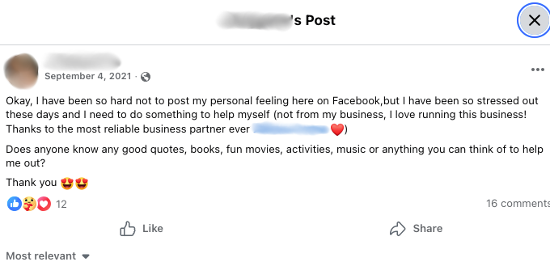
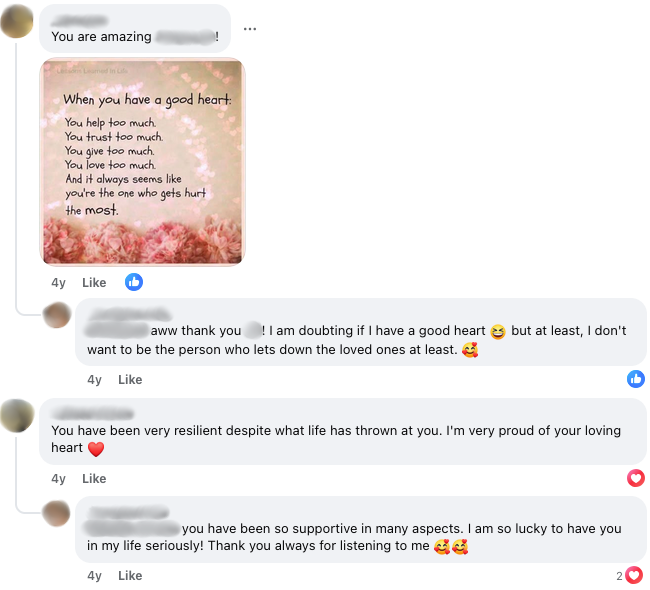
4 September 2021
Because 🅟, the competent "manager of the house" no longer resided there, 🅞 then had to take on that role herself and give the impression of control after the new tenants moved in.
Because of the condo purchase, 🅞's hurt feelings and perceived betrayal strained her ability to communicate directly that summer, so her sudden ability to coordinate calmly was inconsistent and selective. She didn't have the competence to do it before, but messaging 🅢 'privately' was emotionally convenient:
Was she trying to avoid harm, or was she trying to avoid responsibility?
On September 4, 🅞 decided to post her grievance online.
In her mind, 🅢 and 🅟 were the ones who "walked away" or "changed course". She felt that they had been wronged that summer, and she still seemed especially eager to tell their side of the story. To avoid appearing confrontational, instead of making a direct accusation, she instead created contrast, between "those who would never hurt or let down loved ones", and "those who had done so already".
That was their narrative: the loyal ones of that household were betrayed.
Ⓛ6 September 2021, 2:39 pm
Hi 🅟
The cleaning invoice is attached (2 hours plus GST = $76.80). The only other cost is for the replacement key (we only received two back door lower level keys and needed three returned). Under the lease, the key cost is $15See? No big deal.. The total owing is $94.80. This is the final amount owing by you and 🅢 on move out of Birdy house.
Please etransfer the $94.80 to this email address – no password necessary.
Thank you.
Landlord
🅟6 September 2021, 3:06 pm
Hi Landlord,
Thanks and I will e-transfer the money to you right away.
All the best,
🅟 & 🅢
7 The Closure
🅒20 September 2021
Dear 🅢 and 🅟,
I have struggled for a while now on whether or not I should send you this email, however, for my own personal mental health I've come to the conclusion that I need closureThis is entirely one-sided, so how can he call it "closure"?.
Before you read, I want you to know that this was not written in anger"...but we are basically blaming you for everything and it's all your fault.", and should not be read as such, it is simply me expressing what you've done and the consequences of such.
Let's start at the beginning;
You guys decided to buy a houseThis was not the beginning. Why does their account of events, their interpretation of what happened, start in the middle of the summer?, we were left out of the discussion for this process Lie. until much later, when things were pretty much finalizedWhat "thing" was "finalized", was it:
A) 🅢 and 🅟buying for themselves? or B) 🅢 and 🅟not buying with them?
One of these must have been "finalized" first. So which one?. This left us with a feeling of betrayal betrayal (noun)
1. violation of a person's trust or confidence, of a moral standard, etc.
2. a convenient buzzword 🅒 and 🅞 chose to float around to make their sob story more dramatic than it actually was
This word implies that 🅢 and 🅟 broke a promise or something (This is arguable. If they did break the promise then they at least questioned it first. But what would have been the incentive for keeping it?), that some value was being taken away from 🅒 and 🅞. What were 🅒 and 🅞 being deprived of? What was the thing that those two were so desperately holding on to, that 🅢 and 🅟 were somehow taking away from them just because they were leaving the premises?
Money? Physical proximity? The ability to sleep?
Trust?
, however we were trying to understandWhat about this did they have trouble understanding?
🅒 and 🅞 were clearly upset and "disappointed" with them because they didn't buy a house together. In other words, the only way that 🅒 and 🅞 would have been happy is if all four had continued to reside within the same building.
But why?🅒 and 🅞 were begging the question this whole time.
Buying property is a huge financial decision. The problem was that 🅒 and 🅞 were never qualified to give advice on these matters, and they obviously didn't want to put in the work. 🅢 and 🅟trusted that 🅒 and 🅞 would pay attention and do their homework and research like they had all talked about before they moved in together.
But that didn't happen and 🅒 and 🅞 instead sat on their asses that whole summer.
🅒 and 🅞 betrayed 🅢 and 🅟's trust. and move on.
Next, as part of the moving on processThe "moving on process" includes acknowledging the failure of the idea of buying a house together.
Did they actually acknowledge that the idea failed, or were 🅒 and 🅞 still holding onto the delusion that the four of them would all still buy a house together in the near future?
, we had a meeting with you guys to get our thoughts out
What was the purpose of that meeting?
The fact that 🅢 and 🅟 bought a place for themselves was completely irrelevant. If they hadn’t bought that condo, they would STILL initiate a meeting for that summer and the discussion would have been exactly the same, because they still would have explained to 🅒 and 🅞 that they weren’t going to live there for much longer, that they’d still be searching the housing market for themselves.
. Unfortunately, we were unable to do this fully, as every time we tried there were tears, pauses and interrupts 🅒 and 🅞 seemed to think that these interrupts weren't warranted. Going off topic or saying things that were none of their business (e.g. "I thought you didn't want to start a family yet...") with regard to 🅢 and 🅟's needs and why they made certain decisions, is probably going to require interruption: if they didn't want to be interrupted at that meeting, then 🅒 and 🅞probably should have provided information that was at least actionable. The 'tears, pauses and interrupts' were out of frustration, because during that meeting 🅒 and 🅞 refused to pull their heads out of their asses and look at the bigger picture: All four of them were not in a position to be buying a house together.from your end. It seemed to us that the meeting was, for you two, more about making yourselves feel better🅢 and 🅟 had worked their asses off for over a decade -- saving up money, getting their degrees, building their careers, building their credit scores.
Because of that hard work they put in, they were able to finally buy a home. They earned it.
So yes, they did feel pretty good about it. They were proud of themselves, as they should be.
But that wasn't the purpose of the meeting.
The meeting was also not an intervention or some sort of confessional booth where they all admit their guilts and wrongdoings, to get all their 'feelings' out.
No.
The purpose of that meeting was to act as a checkpoint to see where they were at with the idea, to bring useful information to the table so that they could all make decisions as early as possible.
Any exchange of information, any discussions to be had, weren't limited to just that one meeting: it still counted as a discussion even if it happened outside of that meeting. The information that 🅢 and 🅟 brought to the table was a conglomeration of all the information that accumulated outside of that meeting leading up to it, some of this information which 🅒 and 🅞 had provided. They were just reviewing what had already been being discussed.
Again, if 🅢 and 🅟 hadn't bought that condo, this meeting would still happen.
Regardless, what useful information did 🅒 and 🅞 bring to the table at that meeting? than acknowledging why we feltBut why did they feel this way?
There were plenty of emotions to acknowledge, but there were little to no facts to acknowledge. 🅒 and 🅞 didn't provide anything useful during that meeting, only sentiment.terrible'terrible' count: 1.
It is at this point that we made a difficult decision of just keeping quietThis was the lazy route, the easier decision. It would have been more difficult to say something.
Setting aside the fact that he and 🅟 were able to communicate between each other the whole time, he is admitting here that the two of them chose silence and disengagement for the entire rest of the summer, after that meeting. But 🅞's message in the group chat, "I don't think you guys understand the situation and just so itching to get things done. Relationship doesn't work like that.", implied that more discussion and emotional processing was needed for the relationship to 'work'.
To 'protect' the relationship, they stepped aside and allowed the other couple to move forward, yet at the same time they blamed that couple for doing just that--moving forward.
From the moment the offer was accepted and then right up to 🅢 and 🅟 moving out of that rental, it was a full month and a half for 🅒 and 🅞 to process their emotions.
Was that not enough time for 🅒 and 🅞's emotions to catch up?
Why should 🅢 and 🅟 slow down?
, in an attempt to keep the peace and allow you guys to move out peacefully
What would've happened if they didn't "allow [them] to move out peacefully"?
Did they refuse to speak in order to protect🅢 and 🅟? Or was it really because they were overwhelmed and didn’t handle it well?
This wasn’t a war. 🅢 and 🅟 didn't need "protection" from anything. What were they trying to protect 🅢 and 🅟 from?
"Keep the peace"? ...but from what, exactly? Communication? Uncomfortable information?
It's almost like they were implying a threat.
... so what was the threat?
. It was my hope that 'time and distance' would allow us to approach the subject again at a later dateWhen? Again, this was not an original idea -- 🅟 had already mentioned this first.. This was not easy for us, as we kept in a lot of what we wanted to sayA text or email cannot be interrupted. If the concern was being able to say something without being interrupted, they had the entire rest of the summer to provide this information. If this information was so important, 🅒 and 🅞 would have used any means necessary to get this information to 🅢 and 🅟.
Heck, this email that 🅒 spent the time to type out here, on September 20th of 2021, could have been used to disclose this information:
"Dear 🅢 and 🅟,
Here are the things that we didn't get to say at that meeting where you interrupted us ... "
The fact that they never bothered to say the things they 'kept in' but so desperately wanted to, despite having the formats available to them the entire time and having plenty of time to do so, meant one of two things:
Either 1) all they had were more complaints and emotions, which doesn't help anyone, or 2) they didn't have anything to say at all. In other words, the information they had "kept in" was either useless or non-existent.
Conclusion: Liar, liar, pants on fire..
Then, shortly before your move out date, you realised that there was more you both needed to say. You told us how upset you were with us for making you feel terrible'terrible' count: 2, and refused to acknowledge that you did anything wrong in the first place🅢 and 🅟 hadn't done anything wrong, though. This statement needed to be justified before it could be used as part of whatever "argument" this email was trying to lay out.. Of course, all of the emotions and thoughts we had kept in came outBy not communicating, 🅒 and 🅞 caused their own pent-up frustration to accumulate. 🅒 and 🅞 made it worse over time, for themselves. ...but it’s somehow 🅢 and 🅟's fault it released? Whose job was it to rip the bandaid off?, and you decided to 'fix' the situation by speaking to LandlordCommunicating with the landlord was something they were all supposed to be doing. But what more information could 🅢 and 🅟 possibly give to the landlord, especially after🅒 had already chosen that second option, and after the exchange of emails with the landlord had already happened?
(something I had asked you not to do"don't talk to the landlord" count: 4 as we wanted to salvage our reputation with them)What does this have to do with reputation? The only reason there would be concern about that is if 🅒 and 🅞 knew they had done something wrong. But why would they even care what she thought about them? It's pretty sad and pathetic that they are allowing some NPC landlord to have that much power over them..
Unfortunately for us🅒 and 🅞's backup plan was "unfortunate"?
At some point, 🅒 and 🅞 sat down and talked with each other about the possibility of who might live down there, and that they might have to have tenants whom they are not comfortable with (whether they had weekend parties keeping them up at night, or whatever). Not only did they acknowledge the potential discomfort of that situation, they also still accepted that as their backup plan.
, your constant emails to LandlordWhich emails? The one's 🅒 and 🅞 were cc'd in? resulted in quickly filling your vacant spot downstairs with three young college boys. Now we are woken up almost every nightNo quiet time? Not being able to sleep? Now this sounds familiar... Doesn't sound fun, does it? at 1am-3am with talking, yelling, and loud music as well as parties every weekend since they've moved in.
We have tried to speak with these boys about this to find common ground, but alas, they are young dumb college kids, so surprisingly they don't care. They also happen to be sons of friends of Landlord, and due to the fact of all of your guys' emailsThis bears repeating:
Which emails?
, Landlord is siding with them on this (despite us providing proof of their noise🅒 and 🅞, the King and Queen of pettiness. They're damaging their own reputation by doing this.).
Now, we are being forced out of the home, and will have to move for the second time
(There's a quiz at the bottom of this webpage addressing this point.)
this year (hopefully we can receive the same luck you guys did and get out of our lease early).
All of this stemmed fromyour decision to 'speed things up' with LandlordThis was 🅒's decision as well. He wasn't just cc'd in the email discussion with the landlord, he actively participated in that decision-making.. Consequences that I'm sure you were not aware of
Again, all four of them were well aware of these "consequences".
At the time, 🅒 and 🅞 had chosen to establish a situation for themselves where their only option was to rent from house to house to house, paying somebody else's mortgage, with no indication of any effort on their end to steer themselves away from that. 🅢 and 🅟 had already planned ahead and did not want to rent anymore, but all four of them were well aware of what continuing the rental market would look like.
🅒 and 🅞 seemed to forget that they themselves also had agency and foresight too.
Here, 🅒 is framing the problem as 🅢 and 🅟's "unawareness", yet at the same time 🅒 and 🅞 were assuming that 🅢 and 🅟 would continue cooperating without question, despite them clearly pointing out the financial concerns in doing so. 🅒 and 🅞 were thus setting a double standard in terms of everyone's responsibilities.
But here's the real question: How, on Earth, could 🅒 and 🅞 be so unaware of the factors involved in continuing to rent? How could they possibly have not anticipated noisy tenants?
What was going through 🅒's mind when he chose that second option, especially given much earlier he had already accepted that as their backup plan?
.
So, there you go"Passive-aggressiveness doesn't solve problems."
🅢 actually learned this from 🅒, when they worked at the pizza place together years before this incident. Now that is funny. , and here we are now, stuck in this situationUsing similar logic, 🅢 and 🅟 were also "stuck" in a situation and wanted to get out.
But (now listen carefully!) here's the difference:
🅢 and 🅟chose not to stay in that rental. 🅒 and 🅞chose to stay in that rental.
So far, so good?
🅢 and 🅟planned ahead and so were able to "unstuck" themselves. 🅒 and 🅞did not plan ahead and so were not able to "unstuck" themselves.
. Despite all of this I actually do not want you guys to feel🅒 seemed to be giving the impression that 🅢 and 🅟 were supposed to feel guilty, for whatever reason that hadn't been specified yet. He is trying to appear as the thoughtful and forgiving one by letting them off the hook for a crime they hadn't even committed.terrible'terrible' count: 3, I simply want to move on from this.
The reason I sent this is for closure on my end, and to remind you guys of the consequences of your actions so that in the future you don't do this kind of thing
"this kind of thing"? Not only is this not specific, it is also a contradiction: If the consequences couldn’t reasonably be known (they were known: 🅒 and 🅟 had already had this discussion in private already), then how could it be framed as something that should be avoided in the future?
Put simply: How is it possible to actively avoid something whilst being unaware of it?
🅢 and 🅟's actions were what led to them to being able to purchase property.
So why was 🅒 injecting so much negativity into this? Instead of saying "consequences of your actions", why didn't he use the phrase "successful results of your actions"?
🅒 and 🅞 seemed to forget that their inaction had consequences too.
to other peopleThe next time 🅢 and 🅟 encounter another couple as delusional as these two, they will definitely pay closer attention.
👍 Thanks for the warning, 🅒! 👍
.
We are in a terrible'terrible' count: 4 place mentally right now, and it's going to take us months or years to heal from this.
This is the most important bit, so please read carefullyOr else what? What would happen if 🅢 and 🅟 disobeyed these demands? What would have happened if 🅢 and 🅟 did expose their side of the story on social media?
🅒 is bluffing.
;
-This is not a discussion, I do not want to hear a reply about this, on any media platform at all
They seemed to forget that 🅢 and 🅟 weren't limited to social media to get their side of the story out.
.
-Do not try to reach out to either of us, it will only further destroy our mental health
-Do not try to post publicly about this in an effort to validate🅒 and 🅞's shitty attitudes about what happened that summer, including this shitty email, is the validation. 🅢 and 🅟 already had reasons for not continuing with the idea of buying a house with 🅒 and 🅞.
The more 🅒 and 🅞 complained and pointed fingers, the more it proved 🅢 and 🅟's point. By refusing to provide an actual argument for this idea, 🅒 was inevitably causing and demonstrating its failure.
Miranda Rights exist for a reason -- the right to remain silent is so that one doesn't accidentally incriminate themselves. 🅒 did just that, by typing out this email.
Good job, 🅒.
what you've done
Goodbye, and good luck.
21 September 2021🅟 started constructing a lengthy response to 🅒's email.
🅢 explained there's no point: "You've already done enough for the both of us. I'll handle it."
🅢22 September 2021
Ok.
Feel free to use or scrap the App thing, I won't be offended. There's some very skilled people on your game team, so you're in good hands if you decide to make a new one.
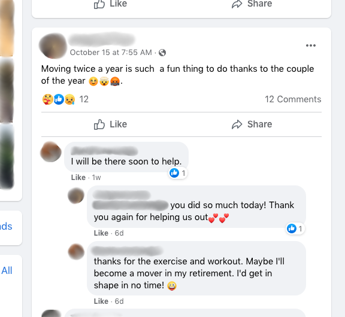
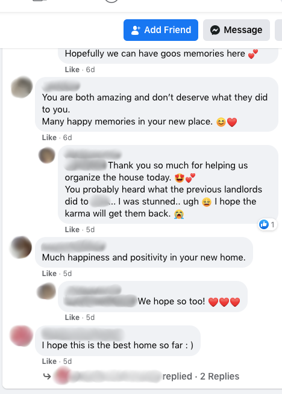
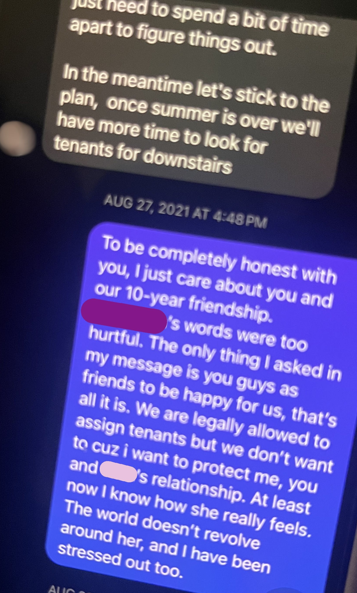
15 October 2021🅞 decided to seek more social validation by making a passive-aggressive post on Facebook, about having to move again.
Friends and family chimed in just like before, which reinforced their narrative: "You [...] don't deserve what they did to you."
28 October 2021
By this time, 🅞 and 🅒 had already blocked and unfriended 🅟 and 🅢 on Facebook and other platforms.
🅟 went to dinner with her friends.
The topic came up and they showed 🅟 the post that 🅞 made:
"Did you see what she posted? What is that about?"
They shared screenshots with 🅟, so she could take them home later to show 🅢.
🅢 dealt with it again.
🅢29 October 2021
If either of you have unresolved feelings, we are open to face-to-face communication. However, there are certain boundary issues we need to address here.
According to 🅒's last email on September 20th, he stated:
"This is not a discussion, I do not want to hear a reply about this, on any media platform at all.
Do not try to post publicly about this in an effort to validate what you've done"
We did respect that and listened. Then in October after we were told explicitly what not to do, this happened on social media. Words get around.
(screenshot of comment)
Confirmation bias🅞 and 🅒 were desperately trying to find everything wrong with the end result instead of recognizing that the alternatives (if any) ain't any better. What happened that summer was the best it could have gone given the available information, the situation, and how 🅞 and 🅒 chose to handle it. This was a perfect example of confirmation bias, of uselessly objecting to a situation without bothering to provide any alternatives.
Were 🅞 and 🅒 expecting a different outcome?
happens naturally. You have your version of the story to tell, we have ours. At this moment, it's getting pointless and pettye.g. this webpage. If any party needs to refresh their memory of the details and how decisions were made, we have everything documented in writing, no words against words.
You do what you gotta do, and we are in no position to stop that. However, mutual respect for boundaries is expected. I have been quiet the whole time, which is not a disadvantage. It helps me to analyse things more clearly. We appreciated 🅒’s calmness and communication during the process.
This will be the last and only message from me. For us, this chapter is closed, no validation needed. We are just two grownups who have simply moved on.i.e. "Grow the fuck up."
29 October 2021🅞 deleted the post about the "couple of the year", but left the other post about "letting down loved ones".
🅞29 October 2021
My apologies for the posting. We were in the extremely stressful situationA 'stressful situation', like, for example:
Two couples living together. both mentally and physically and didn't post that to attack anyone, just needed to ventilate in some way but not the good decision obviously. Deleted and gone
The post was live for 14 days and only removed after direct confrontation. This does not indicate an impulsive, immediately regretted outburst, nor does it indicate genuine accountability. It's just damage control.
"we don't want you to feel guilty about buying a home"
"we didn't post that to attack anyone"
"I actually do not want you guys to feel terrible"
"your commitment wasn't real"
Merely saying these things doesn't magically nullify or confirm what actually happened.
The fact is: they did try to make 🅢 and 🅟 feel guilty. They did attack 🅢 and 🅟. They did blame 🅢 and 🅟 for all the 'bad things' they didn't like.
This was all deliberate. Any time they say they "didn't mean to", they're just lying.
.
You guys may think 🅒 is in calm status out of all this situation and I am the bitchWhat examples did she have in her mind that led her to saying this? but he was the most stressed and devastated oneWhere was 🅒's stress coming from? and I feel terrible'terrible' count: 5 for him. I was pretty disheartened after I saw what 🅟 sent to 🅒 privately on Facebook a while backIt wasn't a "while back" -- it was after🅞's rant in the group chat, where she revealed 🅒 and 🅞's entire hand.. Obviously you guys didn't think me as a friend
Setting aside whether this is true, 🅒never objected to any of these 'private messages' from 🅟. The whole time, he was either agreeing or complying. as much as I cared for you two.
I wasn't going to reply as I don't want to create any tension between us and leave unsolved feelings.
However it's all in the past, we, of course, want to close this chapter of our past friendship that no longer valid.Ok.
But why was 🅒 making 🅞 do the uncomfortable dirty work of having to invalidate the friendship? Why couldn’t 🅒 do that himself?
Your request and concern are considered and appreciated. Hope you accept my apology for the imprudent action that may have crossed your boundaries.These two had already crossed that boundary long ago, when they had the audacity to bitch at the other couple for daring to have place of their own.
This was less about boundaries, and more about putting a stop to their bratty hypocritical behaviour.
This will be the real last message from us. I won't be able to receive either of your email.
Fix the Social Media Post
This story involves
two entities
for example:
- two couples
- two business partners
working together to reach a
common goal
for example:
- testing an idea together
- running a business together
.
How can we make this Facebook post sound more reasonable?
Moving twice a year is such a fun thing to do thanks to the couple of the year 😊🤯🤬
❌ 👎
New chapter of our lives
With a little heavy heart, we have decided to discontinue our plan to purchase a house together. It’s shocking news to ourselves too as we didn’t anticipate that it would happen this soon after only two months of living in a trial rental together in 2021.
Moving twice a year is something both of us couples needed to do. Since the new addition of information that we continued to gather throughout that summer, our housing plan kept being put to the test. We both tried hard to keep this idea up and running to serve our needs. However, it came to the point where we couldn't continue living together in a sustainable way and the difference of priorities in our life stage couldn't be dismissed.
✅ 👍
TL;DR
Both couples agreed to undergo a test.
This test came with the understanding that the very idea they are testing for might not work.
The test required that they all reside in the same household.
🅟🅢 moved into a rental, to test that idea.
🅞🅒 moved into that same rental, to test that same idea.
That rental was a stepping stone for all four of them to figure out their lives. It was never supposed to be the "final answer".
So, once the test finished, however long it would have taken, they were then no longer required to live in that rental.
And so, whatever the outcome would be, whether they end up living together or they go their separate ways in terms of a living space, there would be a 'clean-up' phase afterward to transition out of that rental.
Which means: after the test is finished, either both couples would move out of there at the same time, or if one of the couples leaves first and the other couple decides to stay, finding new tenants as a replacement would be part of that process. Communicating or helping facilitate communication with a landlord would be part of that process. Communicating or helping facilitate communication with each other would be part of that process. Moving around would be a part of that process.
This exit strategy was all part of the work involved in testing this idea.
This is what both couples agreed to, from the very beginning.
After one and a half months, 🅟🅢 reached the conclusion that they didn't want to pursue the idea anymore, and that the idea was going to fail anyway.
🅞🅒 chose to stay in that rental, but 🅟🅢 left, because there was no good reason for them to be there.
Since the idea failed, 🅟🅢 were no longer obligated to continue sharing responsibilities of a joint living space, and at some point would have to draw a line between their responsibilities and that of 🅞🅒.
Therefore, after being given two sublease options, 🅞🅒 chose 'Option 2', of signing a new modified sublease that did not include 🅟🅢,
because both 🅒 and 🅞 each gave their own confirmation that there was no good reason for 🅟🅢 to be included in that rental agreement.
Pop Quiz!
What reasoning did 🅒 provide for why 🅟🅢 did not need to stay on the lease?
What reasoning did 🅞 provide for why 🅟🅢 did not need to stay on the lease?
What was the purpose or goal of moving into that rental together?
Did the two couples successfully complete the test?
Was the experiment a waste of time?
What specifically were they testing for?
When 🅟🅢 sent them that first email on July 8th explaining why the idea wasn’t feasible anymore, up to that point and including that email, had 🅟🅢 done anything wrong?
If 🅞🅒 disagreed with the statement that "getting a house together doesn't seem feasible anymore", then what was 🅞🅒's only job, their main responsibility, from that point going forward?
When 🅟🅢 sent them that second email on July 15th explaining the logistics of moving out, up to that point and including that email, had 🅟🅢 done anything wrong?
What would have been the easiest way for 🅞🅒 to avoid or prevent having to suffer through the 'tears, pauses and interrupts' at that infamous meeting?
If 🅟 hadn’t said that message on August 27th ("One last thing..."), would that have changed 🅞🅒's emotions?
If 🅟🅢 hadn't bought that condo, would the rest of the summer play out differently?
If 🅟🅢 hadn't bought that condo, would 🅒's email on September 20th be any different?
Buying a house together was a(n) _____ .
Which person in this story was doing most of the research in the housing market?
Which person in this story was paying the most attention to everyone's qualifications?
Which person in this story was paying the most attention to their financial security?
Which person in this story was paying the most attention to the household dynamic and everyone's compatibility with each other?
Which person in this story did the most work in coming up with ideas and solutions on how best to navigate the situation?
Which person in this story did the most work in trying to facilitate communication, between the two couples as well as with the landlord?
Were 🅞 and 🅟 able to communicate that whole summer?
Were 🅒 and 🅟 able to communicate that whole summer?
If 🅟 hadn't communicated with 🅒 and didn't share any information, would it have been more stressful for 🅒?
It was a lot of work purchasing property. Was 🅟 stressed out because of all that work?
Why were 🅒 and 🅟 communicating in private?
What does "commitment" mean?
What was the main reason for the idea failing?
Which of the following were the least directly responsible for 🅞🅒's difficuly sleeping at night on weekends?
Were 🅒 and 🅞 the only ones who had to move twice that year?
Did 🅢 and 🅟 ever complain about having to move twice that year?
Did 🅢 and 🅟 ever blame 🅒 and 🅞 for having to move twice that year?
If 🅢 and 🅟 hadn't bought the condo and instead stayed in that rental indefinitely, would 🅒 and 🅞 still have to move for a second time?
If 🅢 and 🅟 (somehow) bought a house with 🅒 and 🅞, would 🅒 and 🅞 still have to move for a second time?
Why did 🅒 and 🅞 complain about having to move for a second time?